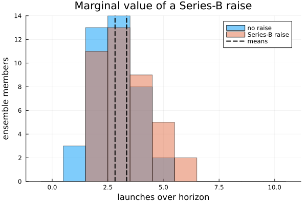

Advanced tutorial — a structured-token R&D portfolio under contention
What you will build. A portfolio of R&D programs modeled as structured tokens — first-class entities that each carry a lifecycle phase and a net-present value npv, keep a stable identity as they advance, and compete for a scarce shared resource. We author the lifecycle as a phase-as-attribute pipeline, select programs by a value threshold, ration a contended capital pool through the priority allocator, add an in-model management lever, and close on the marginal value of a financing decision computed across a seeded ensemble.
Who this is for. Readers who have done the introductory tutorial and are comfortable with @reaction_network, simulate, and reading prob.sol by name. The introductory tier stayed entirely in the classical regime — every quantity was a plain counted stock. Here we take the step that distinguishes ReactiveDynamics from a plain reaction engine: tokens with attributes and identity, moved through a lifecycle by predicate-selected transitions, under a resource algebra with a priority allocator.
The through-line. One small R&D portfolio, growing in sophistication section by section: structured tokens (§1) → a phase lifecycle (§2) → value-qualified selection (§3) → the resource modalities and the allocator that make capital genuinely scarce (§4) → an in-model financing lever (§5) → the marginal value of that lever, with a standard error (§6).
using ReactiveDynamics
using ReactiveDynamics: register_structured_species!, get_species, inners, getagent,
Rule, Seq, SetSpecies, AddToken, Log, PopulationEntry
using Statistics # mean / std for the ensemble reductions
using Distributions # Normal, for a sampled starting portfolio
using Plots # inline figuresThe structured-token TYPE and several helpers live in the ReactiveDynamics module (that is where the selection / advancement machinery can see them), so we keep a short qualified alias.
const RD = ReactiveDynamicsReactiveDynamics1. Structured tokens: a program is an entity, not a count
A classical species is a scalar — a single Float64 saying "how many A there are." That is exactly right for indistinguishable molecules, but a program in a portfolio is not a molecule. We want each program to carry attributes (its current phase, its value) and a stable identity — the same object as it advances Phase1 → Phase2 → …, so a downstream report can follow it.
A structured token gives us that: a first-class agent carrying host-Julia fields, whose identity (uuid / kind / creation index) is preserved as the engine mutates its fields. We define the kind in ReactiveDynamics' own scope with the @register / @aagent idiom, because the engine's selection and advancement machinery lives there and must see the type. The four leading constructor arguments are the @aagent protocol fields, in order — a unique name, the species kind tag (here :Project; every program shares one kind), a bound_transition (nothing until a transition binds the token), and an empty past_bonds history — followed by our two modeling attributes, phase and npv.
@register begin
@aagent BaseStructuredToken AbstractStructuredToken struct ProjectToken
phase::Symbol # lifecycle stage — the canonical "phase-as-attribute"
npv::Float64 # the program's net-present value (a plain descriptor field)
end
function ProjectToken(phase, npv)
return ProjectToken(
"Proj" * string(rand(1:(10^9))), # name
:Project, # kind (one kind for all phases)
nothing, # bound_transition
Tuple{Symbol, Float64, ReactiveDynamics.Transition}[], # past_bonds
phase,
npv,
)
end
endReactiveDynamics.ProjectTokenThe registry maps a kind symbol to a constructor (state, fields::Dict) -> token. A serialized model, a declarative population, or an injected token all reference host token kinds by name, and the registry is how those names resolve to real Julia constructors without any data file carrying code. The same registry serves the declarative population here and the AddToken lever in §5.
const REGISTRY = Dict{Symbol, Any}(
:Project => (state, f) -> RD.ProjectToken(get(f, :phase, :Phase1), get(f, :npv, 100.0)),
)Dict{Symbol, Any} with 1 entry:
:Project => #2A few reductions over the live token pool (the structured container is a Dict keyed by token name; we usually want the values):
livetokens(p) = collect(values(inners(getagent(p, "structured"))))
nphase(p, ph) = count(t -> get_species(t) == :Project && t.phase == ph, livetokens(p))
nlaunched(p) = nphase(p, :Launched)
nretired(p) = count(t -> get_species(t) == :removed, livetokens(p))nretired (generic function with 1 method)We seed the starting portfolio with the declarative population initial marking, passed to the constructor and instantiated before t = 0. This is preferred over an imperative post-construction loop because the run is then reproducible from (model, population, seed) — the portfolio is reproducible input, not host code that runs after the model exists. Two authoring forms exist.
Form A is an explicit host-token list — a fixed, hand-authored opening portfolio:
explicit_portfolio() = [
RD.ProjectToken(:Phase1, 120.0),
RD.ProjectToken(:Phase1, 90.0),
RD.ProjectToken(:Phase2, 200.0),
RD.ProjectToken(:Phase2, 150.0),
RD.ProjectToken(:Phase3, 300.0),
]explicit_portfolio (generic function with 1 method)Form B is the PopulationEntry "count + attribute expressions" form — "N programs with these attributes." A symbol literal is wrapped with QuoteNode; a value may be a sampled expression drawn from the run's seeded RNG (state.rng), so a same-seed construction is reproducible:
sampled_portfolio() = [
PopulationEntry(
:Project, :Project; count = 4,
attributes = Dict(
:phase => QuoteNode(:Phase1),
:npv => :(rand(state.rng, Normal(100.0, 15.0))),
),
),
PopulationEntry(
:Project, :Project; count = 3,
attributes = Dict(:phase => QuoteNode(:Phase2), :npv => 200.0),
),
]sampled_portfolio (generic function with 1 method)To see a token before we build a model around it, construct one directly and read its fields. A demo token, and the two population forms materialized under a seed:
demo_tok = RD.ProjectToken(:Phase1, 120.0)
println("A single ProjectToken : phase=", demo_tok.phase, " npv=", demo_tok.npv, " kind=", get_species(demo_tok))
println(
"Form A explicit portfolio: ", length(explicit_portfolio()), " programs, phases = ",
sort(string.([t.phase for t in explicit_portfolio()]))
)A single ProjectToken : phase=Phase1 npv=120.0 kind=Project
Form A explicit portfolio: 5 programs, phases = ["Phase1", "Phase1", "Phase2", "Phase2", "Phase3"]2. A phase-as-attribute lifecycle
A naive design would make a species per phase (Phase1, Phase2, …) and "advance" by destroying a Phase1 token and creating a Phase2 token. That breaks identity — the new token is a different object — and multiplies the species count. The canonical ReactiveDynamics design is phase-as-attribute: there is one :Project kind, and phase is a field. A pipeline step reads
@select(Project, <clause>) --> @advance(phase, :NextPhase)@select(Project, clauses) binds only tokens of kind Project whose attributes satisfy the conjunctive && clause (operators == != < <= > >= in). @advance(phase, :Phase2) writes the bound token's phase field in place — the same object, identity preserved.
A stage gate can also fail: probability => q makes each advance a Binomial(·, q) trial. On failure the bound token soft-retires — its species flips to :removed and its phase records how far it got (a killed Phase2 program stays at phase == :Phase2 but species == :removed).
We build the portfolio's lifecycle as three timed advances. Each advance also holds a shared capital pool via @conserved — capital is occupied for the duration of an in-flight advance and returned when it completes — so the number of programs that can advance at once is bounded by capital. That is the contention we ration in §4 and relieve in §5; here we just watch the pipeline run. priority orders who wins capital when it is scarce (late-stage programs first). We read one tick as one quarter, so tspan = 12 is a three-year horizon.
function portfolio_model()
net = @reaction_network begin
@deterministic(1.0),
@select(Project, phase == :Phase1) + 2 * @conserved(capital) --> @advance(phase, :Phase2),
name => adv12, cycletime => 1.0, probability => 0.9, priority => 1.0
@deterministic(1.0),
@select(Project, phase == :Phase2) + 3 * @conserved(capital) --> @advance(phase, :Phase3),
name => adv23, cycletime => 2.0, probability => 0.6, priority => 2.0
@deterministic(1.0),
@select(Project, phase == :Phase3) + 4 * @conserved(capital) --> @advance(phase, :Launched),
name => adv3L, cycletime => 2.0, probability => 0.9, priority => 3.0
end
@prob_init net capital = 18
register_structured_species!(net, :Project)
@prob_meta net tspan = 12 dt = 1.0
return net
endportfolio_model (generic function with 1 method)Build with the explicit Form-A portfolio, thread a seed, and simulate. The starting portfolio and the launch count at the horizon:
p_life = ReactionNetworkProblem(
portfolio_model(); seed = 1, registry = REGISTRY, population = explicit_portfolio(),
)
println(
"t=0 by phase : Phase1=", nphase(p_life, :Phase1), " Phase2=", nphase(p_life, :Phase2),
" Phase3=", nphase(p_life, :Phase3), " Launched=", nphase(p_life, :Launched)
)
simulate(p_life)
println("After 12 quarters:")
println(" Launched : ", nlaunched(p_life))
println(" still in Phase2/Phase3: ", nphase(p_life, :Phase2), " / ", nphase(p_life, :Phase3))
println(" soft-retired (failed a gate, :removed): ", nretired(p_life))t=0 by phase : Phase1=2 Phase2=2 Phase3=1 Launched=0
After 12 quarters:
Launched : 4
still in Phase2/Phase3: 0 / 0
soft-retired (failed a gate, :removed): 1The Phase2 → Phase3 gate succeeds only 60% of the time, so some programs soft-retire while others reach :Launched. A launched program is the same object that started in Phase1 — @advance rewrote its field in place; it never became a different token.
Form B, materialized: the PopulationEntry form builds the same kind from a count plus seeded attribute expressions. The sampled Phase1 NPVs are reproducible under the seed.
p_formB = ReactionNetworkProblem(
portfolio_model(); seed = 42, registry = REGISTRY, population = sampled_portfolio(),
)
println("Form B population: built ", length(livetokens(p_formB)), " programs (4 Phase1 sampled + 3 Phase2).")
println(
" sampled Phase1 NPVs (seeded, reproducible): ",
round.(sort([t.npv for t in livetokens(p_formB) if t.phase == :Phase1]); digits = 1)
)Form B population: built 7 programs (4 Phase1 sampled + 3 Phase2).
sampled Phase1 NPVs (seeded, reproducible): [86.8, 86.9, 89.0, 111.8]3. Value-qualified selection
The power of @select is that its predicate is a filter over token attributes: only the matching subset is bindable. A continuous clause like npv > θ lets a transition act on a value threshold — "fast-track only the high-value Phase2 programs." When several tokens match but the transition can fire on only a few per tick, which bind first is deterministic: equal-priority ties break by creation order (the earlier-added token wins), not by dictionary hash order or the tokens' random names, so a predicate-selected pipeline reproduces exactly under (model, seed).
function fasttrack_model()
net = @reaction_network begin
@deterministic(1.0),
@select(Project, phase == :Phase2 && npv > 150.0) --> @advance(phase, :Phase3),
name => fasttrack, cycletime => 1.0, probability => 1.0
end
register_structured_species!(net, :Project)
@prob_meta net tspan = 3 dt = 1.0
return net
end
p_sel = ReactionNetworkProblem(
fasttrack_model(); seed = 1, registry = REGISTRY,
population = [
RD.ProjectToken(:Phase2, 100.0), # below θ = 150 — stays in Phase2
RD.ProjectToken(:Phase2, 220.0), # above θ — fast-tracked
RD.ProjectToken(:Phase2, 180.0), # above θ — fast-tracked
RD.ProjectToken(:Phase1, 999.0), # wrong phase — the && clause gates BOTH phase and npv
],
)
println("Predicate: @select(Project, phase == :Phase2 && npv > 150.0) --> @advance(:Phase3)")
println("Before: Phase1=", nphase(p_sel, :Phase1), " Phase2=", nphase(p_sel, :Phase2), " Phase3=", nphase(p_sel, :Phase3))
simulate(p_sel)
println("After : Phase1=", nphase(p_sel, :Phase1), " Phase2=", nphase(p_sel, :Phase2), " Phase3=", nphase(p_sel, :Phase3))Predicate: @select(Project, phase == :Phase2 && npv > 150.0) --> @advance(:Phase3)
Before: Phase1=1 Phase2=3 Phase3=0
After : Phase1=1 Phase2=1 Phase3=2Only the two high-NPV Phase2 programs advanced; the npv = 100 program stayed (below θ), and the Phase1 program was never eligible (the conjunctive clause gates phase and npv). The same selection logic drives the dynamics, the analysis queries, and the population-write actions — one predicate machinery throughout.
4. Resource modalities and the allocator under contention
A reactant is not simply "consumed." The engine has a small algebra of resource behaviors, set by wrapping a species in a modality macro on the left-hand side. The behavior depends on when the resource is drawn and whether it comes back — this is the engine's signature feature, and the truth table lands here:
| LHS form | meaning | pool shape over time |
|---|---|---|
X (bare) | raw consumed — debited at spawn, never returned | drains monotonically |
@conserved(X) | held then returned in full at finish | plateaus above zero |
@rate(X) | metered per ongoing tick (needs cycletime > 0) | keeps draining while instances live |
@nonblock(X) | held but freed every step (a soft hold) | stays non-negative, does not drain |
@rate(@conserved(X)) | drawn per tick and credited back at finish (a rented hold) | plateaus high |
The foot-gun to remember: @rate's per-step draw is gated on cycletime > 0. With the default cycletime = 0, an instance never persists across a tick boundary, so a @rate reservation would never fire. Rather than let that reserve nothing silently, the engine's construction validator (CONTRACT §1.4) now rejects the combination outright — a modeling mistake caught at build time rather than a silently-wrong run. We exercise three legal rows in their own tiny models and read each pool's trajectory (the tell is the shape), then show the validator refusing the illegal one.
raw = @reaction_network begin
@deterministic(1.0), 2 * material --> widget, name => build
end
@prob_init raw material = 100 widget = 0
raw_prob = ReactionNetworkProblem(raw, Dict(); tspan = 3, dt = 1.0)
simulate(raw_prob)
println(
"raw 2*material --> widget : material ", raw_prob.sol[!, "material"][1], " → ",
raw_prob.sol[!, "material"][end], " (monotone drain; consumed mass never returns)"
)
cons = @reaction_network begin
@deterministic(1.0), 3 * @conserved(cash) --> product, name => hold, cycletime => 3.0
end
@prob_init cons cash = 100 product = 0
cons_prob = ReactionNetworkProblem(cons, Dict(); tspan = 12, dt = 1.0)
simulate(cons_prob)
println(
"@conserved(cash) : cash steady floor ", cons_prob.sol[!, "cash"][end],
" (held during the cycle, returned in full ⇒ plateaus above 0)"
)
rate = @reaction_network begin
@deterministic(1.0), @rate(fuel) --> trip, name => drive, cycletime => 3.0
end
@prob_init rate fuel = 1000 trip = 0
rate_prob = ReactionNetworkProblem(rate, Dict(); tspan = 6, dt = 1.0)
simulate(rate_prob)
println(
"@rate(fuel) (ct=3) : per-tick draws ", Int.((-diff(rate_prob.sol[!, "fuel"]))[1:4]),
"... (metered each ongoing tick; ramps then saturates at 3 concurrent)"
)
footgun = @reaction_network begin
@deterministic(1.0), @rate(fuel) --> out, name => r0
end
@prob_init footgun fuel = 100 out = 0
try
ReactionNetworkProblem(footgun, Dict(); tspan = 4, dt = 1.0)
println("@rate FOOT-GUN (ct=0) : constructed (unexpected)")
catch err
msg = sprint(showerror, err)
println(
"@rate FOOT-GUN (ct=0) : REJECTED at construction ⇒ ",
occursin("cycletime == 0 is illegal", msg) ? "CONTRACT §1.4 validator fired (@rate needs cycletime > 0)" : msg
)
endraw 2*material --> widget : material 100.0 → 92.0 (monotone drain; consumed mass never returns)
@conserved(cash) : cash steady floor 94.0 (held during the cycle, returned in full ⇒ plateaus above 0)
@rate(fuel) (ct=3) : per-tick draws [1, 2, 3, 3]... (metered each ongoing tick; ramps then saturates at 3 concurrent)
@rate FOOT-GUN (ct=0) : REJECTED at construction ⇒ CONTRACT §1.4 validator fired (@rate needs cycletime > 0)The priority-weighted allocator
When several transitions want the same scarce pool in one tick, the engine rations it with a priority-weighted progressive-filling allocator. Each transition's fill grows at a rate proportional to its priority weight; it freezes when it hits its cap or a resource it needs runs out. The routine is work-conserving (nothing usable is left idle). We can call it directly: two requesters each demand 5 from a supply of 8, with priority weights 1 and 3.
reqs = reshape([5.0, 5.0], 1, 2) # req[resource, transition]
ws = RD.AllocWorkspace(reqs)
f = RD.progressive_fill!(ws, [8.0], [1.0, 3.0]; fmax = [Inf, Inf])
allocs = vec(ws.req .* f')
println("progressive_fill! — contended (supply 8 < demand 10), weights 1:3")
println(
" allocation : ", round.(allocs; digits = 2), " (ratio ≈ ",
round(allocs[2] / allocs[1]; digits = 2), ", the priority ratio; Σ = ", sum(allocs), " = supply)"
)progressive_fill! — contended (supply 8 < demand 10), weights 1:3
allocation : [2.0, 6.0] (ratio ≈ 3.0, the priority ratio; Σ = 8.0 = supply)The same rationing happens inside a running model. Two transitions compete for a scarce shared cash pool, each holding it via @conserved over a cycle so the reservation persists. They demand the same amount but carry priorities 1 and 3; with financing calibrated to keep cash genuinely scarce, the higher-priority transition should win more instances — visible in the output counts.
contend = @reaction_network begin
@deterministic(3.0), 4 * @conserved(cash) --> lowprod,
name => low, cycletime => 2.0, priority => 1.0
@deterministic(3.0), 4 * @conserved(cash) --> highprod,
name => high, cycletime => 2.0, priority => 3.0
@deterministic(6.0), ∅ --> cash, name => financing # steady but insufficient inflow
end
@prob_init contend cash = 12 lowprod = 0 highprod = 0
@prob_meta contend tspan = 30 dt = 1.0
p_contend = ReactionNetworkProblem(contend; seed = 4)
simulate(p_contend)
lo = Int(p_contend.sol[!, "lowprod"][end]); hi = Int(p_contend.sol[!, "highprod"][end])
println("In-model contention for a scarce `cash` pool (both demand 4; priority 1 vs 3):")
println(
" low-priority output : ", lo, " high-priority output: ", hi,
hi > lo ? " ⇒ the higher-priority transition won more" : " (allocator active)"
)In-model contention for a scarce `cash` pool (both demand 4; priority 1 vs 3):
low-priority output : 78 high-priority output: 87 ⇒ the higher-priority transition won moreThis is exactly the mechanism at work in our portfolio model: the three advances hold @conserved capital with ascending priority, so when capital is tight, late-stage programs (nearest to launch) win it first. That is what makes the financing lever in the next section a real decision — capital genuinely binds.
5. An in-model decision rule as a management lever
A management decision — "if conditions hold, take an action" — is itself part of the model, a typed Rule, not host patch code that reaches in and mutates the run from outside. A rule has
Rule(id, guard::Expr, action; fire_mode = :once | :every_tick)The guard is evaluated against the live state (@t() is the clock; species and params are in scope). fire_mode = :once fires the action the first tick its guard holds, then latches off (_reinit! re-arms it). Actions compose via Seq: SetSpecies injects into a resource pool, SetParams flips a model parameter, AddToken injects a fresh token by kind through the registry, and Log annotates.
Our lever models a Series-B raise: once t > 3, inject capital into the contended pool and add one fresh Phase2 program to the portfolio — a recapitalization that both relieves the binding constraint and expands the pipeline, all in the model.
raise_lever() = Rule(
:series_b, :(@t() > 3.0),
Seq(
[
SetSpecies(:capital, 40, :inc), # +40 capital into the pool
AddToken(:Project, [:phase => QuoteNode(:Phase2), :npv => 200.0]), # seed one more Phase2 program
Log("Series-B raised: +40 capital, +1 Phase2 program"),
],
);
fire_mode = :once,
)raise_lever (generic function with 1 method)Run the portfolio with the lever armed, over the same starting portfolio as §2:
p_lever = ReactionNetworkProblem(
portfolio_model(); seed = 1, registry = REGISTRY,
population = explicit_portfolio(), rules = [raise_lever()],
)
simulate(p_lever)
capital_series = p_lever.sol[!, "capital"]
println("Rule: once @t() > 3, Seq[ +40 capital, AddToken(Phase2 npv=200) ] (fire_mode = :once)")
println(" positive capital jumps : ", count(>(0.0), diff(capital_series)), " (a :once rule fires exactly once)")
println(" peak capital reached : ", round(maximum(capital_series); digits = 1), " (was 18 at t=0)")
println(" rule latched off : enabled = ", p_lever.rules[1].enabled)
println(" Launched with the raise: ", nlaunched(p_lever), " (vs ", nlaunched(p_life), " without, same seed)")Series-B raised: +40 capital, +1 Phase2 program
Rule: once @t() > 3, Seq[ +40 capital, AddToken(Phase2 npv=200) ] (fire_mode = :once)
positive capital jumps : 1 (a :once rule fires exactly once)
peak capital reached : 51.0 (was 18 at t=0)
rule latched off : enabled = false
Launched with the raise: 4 (vs 4 without, same seed)The decision lives in the model — the driver only set the seed and armed the rule; no host code reached in mid-run. That is what makes the scenario a reproducible (model, rules, seed) triple rather than an imperative script, and what lets us treat "raise or not" as a clean A/B in the next section.
6. The marginal value of the raise
One run is a single sample of a stochastic process. To value the raise we need a distribution, so we build two ensembles over the same seeds — a baseline (no lever) and a deal arm (lever armed) — and compare launches. ensemble(build; nseed, root_seed) runs nseed independent members, member k seeded deterministically from hash((root_seed, k)), so member k is reproducible regardless of how many members you run or in what order. The result is an EnsembleProblem.
launches(p) = nlaunched(p)
baseline_arm(s) = (
p = ReactionNetworkProblem(
portfolio_model(); seed = s, registry = REGISTRY, population = explicit_portfolio(),
);
simulate(p); p
)
deal_arm(s) = (
p = ReactionNetworkProblem(
portfolio_model(); seed = s, registry = REGISTRY,
population = explicit_portfolio(), rules = [raise_lever()],
);
simulate(p); p
)
base_ens = ensemble(baseline_arm; nseed = 40, root_seed = 2026)
deal_ens = ensemble(deal_arm; nseed = 40, root_seed = 2026)agent ensemble with uuid 6a7dcec1 of type EnsembleProblem
custom properties:
members: ReactionNetworkProblem[ReactionNetworkProblem{name=member_1, uuid=1771ea25, parent=EnsembleProblem{name=ensemble, uuid=6a7dcec1, parent=nothing}}, ReactionNetworkProblem{name=member_2, uuid=e0f550be, parent=EnsembleProblem{name=ensemble, uuid=6a7dcec1, parent=nothing}}, ReactionNetworkProblem{name=member_3, uuid=e43f875b, parent=EnsembleProblem{name=ensemble, uuid=6a7dcec1, parent=nothing}}, ReactionNetworkProblem{name=member_4, uuid=4f831dfc, parent=EnsembleProblem{name=ensemble, uuid=6a7dcec1, parent=nothing}}, ReactionNetworkProblem{name=member_5, uuid=4f4e79f6, parent=EnsembleProblem{name=ensemble, uuid=6a7dcec1, parent=nothing}}, ReactionNetworkProblem{name=member_6, uuid=49c85e2d, parent=EnsembleProblem{name=ensemble, uuid=6a7dcec1, parent=nothing}}, ReactionNetworkProblem{name=member_7, uuid=8c40e5be, parent=EnsembleProblem{name=ensemble, uuid=6a7dcec1, parent=nothing}}, ReactionNetworkProblem{name=member_8, uuid=4fca5e1d, parent=EnsembleProblem{name=ensemble, uuid=6a7dcec1, parent=nothing}}, ReactionNetworkProblem{name=member_9, uuid=cf2c0e16, parent=EnsembleProblem{name=ensemble, uuid=6a7dcec1, parent=nothing}}, ReactionNetworkProblem{name=member_10, uuid=6eaf625a, parent=EnsembleProblem{name=ensemble, uuid=6a7dcec1, parent=nothing}} … ReactionNetworkProblem{name=member_31, uuid=0ec699eb, parent=EnsembleProblem{name=ensemble, uuid=6a7dcec1, parent=nothing}}, ReactionNetworkProblem{name=member_32, uuid=97763175, parent=EnsembleProblem{name=ensemble, uuid=6a7dcec1, parent=nothing}}, ReactionNetworkProblem{name=member_33, uuid=fc606c65, parent=EnsembleProblem{name=ensemble, uuid=6a7dcec1, parent=nothing}}, ReactionNetworkProblem{name=member_34, uuid=acf97942, parent=EnsembleProblem{name=ensemble, uuid=6a7dcec1, parent=nothing}}, ReactionNetworkProblem{name=member_35, uuid=cb9563b9, parent=EnsembleProblem{name=ensemble, uuid=6a7dcec1, parent=nothing}}, ReactionNetworkProblem{name=member_36, uuid=7c99cde9, parent=EnsembleProblem{name=ensemble, uuid=6a7dcec1, parent=nothing}}, ReactionNetworkProblem{name=member_37, uuid=87f3c712, parent=EnsembleProblem{name=ensemble, uuid=6a7dcec1, parent=nothing}}, ReactionNetworkProblem{name=member_38, uuid=dcd99d56, parent=EnsembleProblem{name=ensemble, uuid=6a7dcec1, parent=nothing}}, ReactionNetworkProblem{name=member_39, uuid=23d88ddb, parent=EnsembleProblem{name=ensemble, uuid=6a7dcec1, parent=nothing}}, ReactionNetworkProblem{name=member_40, uuid=0074a9b9, parent=EnsembleProblem{name=ensemble, uuid=6a7dcec1, parent=nothing}}]
seeds: UInt64[0x93bfd7f82be04142, 0x8060437705211850, 0x6cffb3515e5ff815, 0x59a0ddcb37a24d19, 0x46400f8c90e0b0ac, 0x32e177e96a238176, 0x1f8066e7c3615f83, 0x0c228ec39ca5af4b, 0xf8c1230975e2d7e7, 0xe560d1344f22344d … 0x4e89f5d621747ee7, 0x3b2c53987ab93a7c, 0x27cd1ed3d3fad103, 0x146c80f82d39955c, 0x010cb2150679f7a6, 0xeda68e105fadafad, 0xda4669d438ed6745, 0xc6e7546e922f3c8a, 0xb38686676b6da08c, 0xa028b28a44b1f8e2]
root_seed: 2026
mode: rebuild
inner agents:
agent member_12 with uuid b896e283 of type ReactionNetworkProblem
custom properties:
network: ReactiveDynamics.ReactionNetwork(Dict(:T => 3, :P => 0, :M => 2, :obs => 0, :S => 2, :E => 0), (specName = ReactiveDynamics.AttrColumn{Symbol}([:Project, :capital], Bool[1, 1]), specModality = ReactiveDynamics.AttrColumn{Set{Symbol}}(Set{Symbol}[Set(), Set()], Bool[1, 1]), specInitVal = ReactiveDynamics.AttrColumn{Union{Float64, Int64, AbstractString, Expr, Function, Symbol}}(Union{Float64, Int64, AbstractString, Expr, Function, Symbol}[0.0, 18], Bool[1, 1]), specInitUncertainty = ReactiveDynamics.AttrColumn{Union{Float64, Int64, AbstractString, Expr, Function, Symbol}}(Union{Float64, Int64, AbstractString, Expr, Function, Symbol}[0.0, 0.0], Bool[1, 1]), specCost = ReactiveDynamics.AttrColumn{Union{Float64, Int64, AbstractString, Expr, Function, Symbol}}(Union{Float64, Int64, AbstractString, Expr, Function, Symbol}[0.0, 0.0], Bool[1, 1]), specReward = ReactiveDynamics.AttrColumn{Union{Float64, Int64, AbstractString, Expr, Function, Symbol}}(Union{Float64, Int64, AbstractString, Expr, Function, Symbol}[0.0, 0.0], Bool[1, 1]), specValuation = ReactiveDynamics.AttrColumn{Union{Float64, Int64, AbstractString, Expr, Function, Symbol}}(Union{Float64, Int64, AbstractString, Expr, Function, Symbol}[0.0, 0.0], Bool[1, 1]), specStructured = ReactiveDynamics.AttrColumn{Bool}(Bool[1, 0], Bool[1, 1]), specRole = ReactiveDynamics.AttrColumn{Symbol}([:private, :private], Bool[1, 1]), trans = ReactiveDynamics.AttrColumn{Union{Float64, Int64, AbstractString, Expr, Function, Symbol}}(Union{Float64, Int64, AbstractString, Expr, Function, Symbol}[:(@select(Project, phase == :Phase1) + 2 * @conserved(capital) → @advance(phase, :Phase2)), :(@select(Project, phase == :Phase2) + 3 * @conserved(capital) → @advance(phase, :Phase3)), :(@select(Project, phase == :Phase3) + 4 * @conserved(capital) → @advance(phase, :Launched))], Bool[1, 1, 1]), transPriority = ReactiveDynamics.AttrColumn{Union{Float64, Int64, AbstractString, Expr, Function, Symbol}}(Union{Float64, Int64, AbstractString, Expr, Function, Symbol}[1.0, 2.0, 3.0], Bool[1, 1, 1]), transRate = ReactiveDynamics.AttrColumn{Union{Float64, Int64, AbstractString, Expr, Function, Symbol}}(Union{Float64, Int64, AbstractString, Expr, Function, Symbol}[1.0, 1.0, 1.0], Bool[1, 1, 1]), transCycleTime = ReactiveDynamics.AttrColumn{Union{Float64, Int64, AbstractString, Expr, Function, Symbol}}(Union{Float64, Int64, AbstractString, Expr, Function, Symbol}[1.0, 2.0, 2.0], Bool[1, 1, 1]), transProbOfSuccess = ReactiveDynamics.AttrColumn{Union{Float64, Int64, AbstractString, Expr, Function, Symbol}}(Union{Float64, Int64, AbstractString, Expr, Function, Symbol}[0.9, 0.6, 0.9], Bool[1, 1, 1]), transCapacity = ReactiveDynamics.AttrColumn{Union{Float64, Int64, AbstractString, Expr, Function, Symbol}}(Union{Float64, Int64, AbstractString, Expr, Function, Symbol}[Inf, Inf, Inf], Bool[1, 1, 1]), transMaxLifeTime = ReactiveDynamics.AttrColumn{Union{Float64, Int64, AbstractString, Expr, Function, Symbol}}(Union{Float64, Int64, AbstractString, Expr, Function, Symbol}[Inf, Inf, Inf], Bool[1, 1, 1]), transPreAction = ReactiveDynamics.AttrColumn{Union{Float64, Int64, AbstractString, Expr, Function, Symbol}}(Union{Float64, Int64, AbstractString, Expr, Function, Symbol}[:(()), :(()), :(())], Bool[1, 1, 1]), transPostAction = ReactiveDynamics.AttrColumn{Union{Float64, Int64, AbstractString, Expr, Function, Symbol}}(Union{Float64, Int64, AbstractString, Expr, Function, Symbol}[:(()), :(()), :(())], Bool[1, 1, 1]), transMultiplier = ReactiveDynamics.AttrColumn{Union{Float64, Int64, AbstractString, Expr, Function, Symbol}}(Union{Float64, Int64, AbstractString, Expr, Function, Symbol}[1, 1, 1], Bool[1, 1, 1]), transName = ReactiveDynamics.AttrColumn{Union{Missing, String, Symbol}}(Union{Missing, String, Symbol}[:adv12, :adv23, :adv3L], Bool[1, 1, 1]), eventTrigger = ReactiveDynamics.AttrColumn{Union{Float64, Int64, AbstractString, Expr, Function, Symbol}}(Union{Float64, Int64, AbstractString, Expr, Function, Symbol}[], Bool[]), eventAction = ReactiveDynamics.AttrColumn{Union{Float64, Int64, AbstractString, Expr, Function, Symbol}}(Union{Float64, Int64, AbstractString, Expr, Function, Symbol}[], Bool[]), obsName = ReactiveDynamics.AttrColumn{Symbol}(Symbol[], Bool[]), obsOpts = ReactiveDynamics.AttrColumn{ReactiveDynamics.FoldedObservable}(ReactiveDynamics.FoldedObservable[], Bool[]), prmName = ReactiveDynamics.AttrColumn{Symbol}(Symbol[], Bool[]), prmVal = ReactiveDynamics.AttrColumn{Any}(Any[], Bool[]), metaKeyword = ReactiveDynamics.AttrColumn{Symbol}([:dt, :tspan], Bool[1, 1]), metaVal = ReactiveDynamics.AttrColumn{Union{Float64, Int64, AbstractString, Expr, Function, Symbol}}(Union{Float64, Int64, AbstractString, Expr, Function, Symbol}[1.0, 12.0], Bool[1, 1])), ReactantSpec[])
attrs: Dict{Symbol, Vector}(:obsOpts => Any[], :metaKeyword => [:dt, :tspan], :specRole => [:private, :private], :specInitUncertainty => [0.0, 0.0], :specInitVal => Real[0.0, 18], :specName => [:Project, :capital], :eventAction => Any[], :prmVal => Any[], :specReward => [0.0, 0.0], :prmName => Any[]…)
transition_recipes: Dict{Symbol, Vector}(:transCapacity => [Inf, Inf, Inf], :transPriority => [1.0, 2.0, 3.0], :transActivated => Bool[1, 1, 1], :transGuard => Any[true, true, true], :transMaxLifeTime => [Inf, Inf, Inf], :transName => [:adv12, :adv23, :adv3L], :transMultiplier => [1, 1, 1], :transToSpawn => [0.0, 0.0, 0.0], :trans => Expr[:(@select(Project, phase == :Phase1) + 2 * @conserved(capital) → @advance(phase, :Phase2)), :(@select(Project, phase == :Phase2) + 3 * @conserved(capital) → @advance(phase, :Phase3)), :(@select(Project, phase == :Phase3) + 4 * @conserved(capital) → @advance(phase, :Launched))], :transProbOfSuccess => [0.9, 0.6, 0.9]…)
u: [2.0, 51.0]
p: Dict{Any, Any}()
t: 13.0
structured_token: [:Project]
tspan: (0.0, 12.0)
dt: 1.0
transitions: Dict{Symbol, Vector}(:transLHS => Any[Any[ReactiveDynamics.UnfoldedReactant(1, :Project, 1.0, Set{Symbol}(), ReactiveDynamics.TokenPredicate(:Project, ReactiveDynamics.Clause[ReactiveDynamics.Clause(:phase, :(==), :(:Phase1))])), ReactiveDynamics.UnfoldedReactant(2, :capital, 2.0, Set([:conserved]), nothing)], Any[ReactiveDynamics.UnfoldedReactant(1, :Project, 1.0, Set{Symbol}(), ReactiveDynamics.TokenPredicate(:Project, ReactiveDynamics.Clause[ReactiveDynamics.Clause(:phase, :(==), :(:Phase2))])), ReactiveDynamics.UnfoldedReactant(2, :capital, 3.0, Set([:conserved]), nothing)], Any[ReactiveDynamics.UnfoldedReactant(1, :Project, 1.0, Set{Symbol}(), ReactiveDynamics.TokenPredicate(:Project, ReactiveDynamics.Clause[ReactiveDynamics.Clause(:phase, :(==), :(:Phase3))])), ReactiveDynamics.UnfoldedReactant(2, :capital, 4.0, Set([:conserved]), nothing)]], :transCapacity => Any[Inf, Inf, Inf], :transToSpawn => Any[0.0, 0.0, 0.0, 0.0, 0.0, 0.0], :transPriority => Any[1.0, 2.0, 3.0], :transFiring => Any[true, true, true], :transProbOfSuccess => Any[0.9, 0.6, 0.9], :transRHS => Any[:(@advance phase :Phase2), :(@advance phase :Phase3), :(@advance phase :Launched)], :transRate => Any[1.0, 1.0, 1.0], :transMaxLifeTime => Any[Inf, Inf, Inf], :transHash => Any[:adv12, :adv23, :adv3L]…)
ongoing_transitions: ReactiveDynamics.Transition[ ReactiveDynamics.Transition{name=adv23_@12.0, uuid=7d734f75, parent=nothing}, ReactiveDynamics.Transition{name=adv3L_@12.0, uuid=bc86311e, parent=nothing}]
log: Tuple[(:new_transitions, 0.0, (:adv12, 1.0), (:adv23, 1.0), (:adv3L, 1.0)), (:saturation, 0.0, (:adv12, 1.0), (:adv23, 1.0), (:adv3L, 1.0)), (:allocation, 0.0, [3.0, 9.0]), (:valuation_cost, 0.0, 0.0), (:terminated_all, 0.0, :adv12 => 1.0), (:terminated_success, 0.0, :adv12 => 1.0), (:valuation_reward, 0.0, 0.0), (:valuation, 0.0, 0.0), (:program_ledger, 0.0, Dict("Proj908317832" => (cost = 0.0, reward = 0.0, valuation = 0.0), "Proj642899368" => (cost = 0.0, reward = 0.0, valuation = 0.0), "Proj563968371" => (cost = 0.0, reward = 0.0, valuation = 0.0), "Proj65618063" => (cost = 0.0, reward = 0.0, valuation = 0.0), "Proj331143211" => (cost = 0.0, reward = 0.0, valuation = 0.0))), (:new_transitions, 1.0, (:adv12, 1.0), (:adv23, 1.0), (:adv3L, 1.0)) … (:program_ledger, 11.0, Dict("Proj908317832" => (cost = 0.0, reward = 0.0, valuation = 0.0), "Proj642899368" => (cost = 0.0, reward = 0.0, valuation = 0.0), "Proj985750467" => (cost = 0.0, reward = 0.0, valuation = 0.0), "Proj563968371" => (cost = 0.0, reward = 0.0, valuation = 0.0), "Proj65618063" => (cost = 0.0, reward = 0.0, valuation = 0.0), "Proj331143211" => (cost = 0.0, reward = 0.0, valuation = 0.0))), (:new_transitions, 12.0, (:adv12, 0.0), (:adv23, 1.0), (:adv3L, 1.0)), (:saturation, 12.0, (:adv23, 1.0), (:adv3L, 1.0), (:adv23, 1.0), (:adv3L, 1.0)), (:allocation, 12.0, [2.0, 7.0]), (:valuation_cost, 12.0, 0.0), (:terminated_all, 12.0, :adv3L => 1.0, :adv23 => 1.0), (:terminated_success, 12.0, :adv3L => 1.0, :adv23 => 1.0), (:valuation_reward, 12.0, 0), (:valuation, 12.0, 0.0), (:program_ledger, 12.0, Dict("Proj908317832" => (cost = 0.0, reward = 0.0, valuation = 0.0), "Proj642899368" => (cost = 0.0, reward = 0.0, valuation = 0.0), "Proj985750467" => (cost = 0.0, reward = 0.0, valuation = 0.0), "Proj563968371" => (cost = 0.0, reward = 0.0, valuation = 0.0), "Proj65618063" => (cost = 0.0, reward = 0.0, valuation = 0.0), "Proj331143211" => (cost = 0.0, reward = 0.0, valuation = 0.0)))]
observables: Dict{Symbol, ReactiveDynamics.Observable}()
wrap_fun: #compile_attrs##2
sol: 14×3 DataFrame
Row │ t Project capital
│ Float64 Float64 Float64
─────┼───────────────────────────
1 │ 0.0 5.0 18.0
2 │ 1.0 3.0 11.0
3 │ 2.0 3.0 11.0
4 │ 3.0 3.0 11.0
5 │ 4.0 1.0 11.0
6 │ 5.0 2.0 54.0
7 │ 6.0 1.0 51.0
8 │ 7.0 2.0 54.0
9 │ 8.0 1.0 51.0
10 │ 9.0 2.0 54.0
11 │ 10.0 2.0 51.0
12 │ 11.0 2.0 51.0
13 │ 12.0 2.0 51.0
14 │ 13.0 2.0 51.0
rng: Random.Xoshiro(0xe5123a8fe62d4bd7, 0x2b6f97576437087a, 0x5b3f9a9da1c85d92, 0xf2f74dbfa040c122, 0xd0bf2036828b0ddb)
seed: 13737001853850736340
initial_rng: Random.Xoshiro(0xe0536687609d2529, 0x3772bf83f6b58b52, 0x82eb8d5bca38fcb8, 0x3f5a880c9cf49ebc, 0xd0bf2036828b0ddb)
rules: Any[Rule(:series_b, :(#= advanced.md:409 =# @t() > 3.0), Seq(ActionStmt[SetSpecies(:capital, 40, :inc), AddToken(:Project, Pair{Symbol, Any}[:phase => :(:Phase2), :npv => 200.0]), Log("Series-B raised: +40 capital, +1 Phase2 program")]), :once, false)]
registry: Dict{Symbol, Any}(:Project => Main.var"#2#3"())
creation_counters: Dict(:Project => 6)
creation_index: Dict("Proj908317832" => 5, "Proj642899368" => 4, "Proj985750467" => 6, "Proj563968371" => 2, "Proj65618063" => 3, "Proj331143211" => 1)
population: ReactiveDynamics.ProjectToken[ ReactiveDynamics.ProjectToken{name=Proj331143211, uuid=84d5153e, parent=FreeAgent{name=structured, uuid=eb04e55f, parent=ReactionNetworkProblem{name=member_12, uuid=b896e283, parent=EnsembleProblem{name=ensemble, uuid=6a7dcec1, parent=nothing}}}}, ReactiveDynamics.ProjectToken{name=Proj563968371, uuid=695bb269, parent=FreeAgent{name=structured, uuid=eb04e55f, parent=ReactionNetworkProblem{name=member_12, uuid=b896e283, parent=EnsembleProblem{name=ensemble, uuid=6a7dcec1, parent=nothing}}}}, ReactiveDynamics.ProjectToken{name=Proj65618063, uuid=5bc463d9, parent=FreeAgent{name=structured, uuid=eb04e55f, parent=ReactionNetworkProblem{name=member_12, uuid=b896e283, parent=EnsembleProblem{name=ensemble, uuid=6a7dcec1, parent=nothing}}}}, ReactiveDynamics.ProjectToken{name=Proj642899368, uuid=76771763, parent=FreeAgent{name=structured, uuid=eb04e55f, parent=ReactionNetworkProblem{name=member_12, uuid=b896e283, parent=EnsembleProblem{name=ensemble, uuid=6a7dcec1, parent=nothing}}}}, ReactiveDynamics.ProjectToken{name=Proj908317832, uuid=533d926a, parent=FreeAgent{name=structured, uuid=eb04e55f, parent=ReactionNetworkProblem{name=member_12, uuid=b896e283, parent=EnsembleProblem{name=ensemble, uuid=6a7dcec1, parent=nothing}}}}]
init_snapshot: Dict{String, Dict{Symbol, Any}}("Proj908317832" => Dict(:species => :Project, :npv => 300.0, :phase => :Phase3), "Proj642899368" => Dict(:species => :Project, :npv => 150.0, :phase => :Phase2), "Proj563968371" => Dict(:species => :Project, :npv => 90.0, :phase => :Phase1), "Proj65618063" => Dict(:species => :Project, :npv => 200.0, :phase => :Phase2), "Proj331143211" => Dict(:species => :Project, :npv => 120.0, :phase => :Phase1))
live: true
program_ledgers: Dict{String, ProgramLedger}("Proj908317832" => ProgramLedger(:Project, 5, 0.0, 0.0, 0.0, Tuple{Float64, Symbol, Float64, String}[]), "Proj642899368" => ProgramLedger(:Project, 4, 0.0, 0.0, 0.0, Tuple{Float64, Symbol, Float64, String}[]), "Proj985750467" => ProgramLedger(:Project, 6, 0.0, 0.0, 0.0, Tuple{Float64, Symbol, Float64, String}[]), "Proj563968371" => ProgramLedger(:Project, 2, 0.0, 0.0, 0.0, Tuple{Float64, Symbol, Float64, String}[]), "Proj65618063" => ProgramLedger(:Project, 3, 0.0, 0.0, 0.0, Tuple{Float64, Symbol, Float64, String}[]), "Proj331143211" => ProgramLedger(:Project, 1, 0.0, 0.0, 0.0, Tuple{Float64, Symbol, Float64, String}[]))
unattributed_cost: 0.0
unattributed_reward: 0.0
external_inputs: Dict{Symbol, Any}()
external_input_defaults: Dict{Symbol, Any}()
token_trajectory: Tuple{Float64, String, Symbol, NamedTuple}[]
inner agents: structured
agent member_10 with uuid 6eaf625a of type ReactionNetworkProblem
custom properties:
network: ReactiveDynamics.ReactionNetwork(Dict(:T => 3, :P => 0, :M => 2, :obs => 0, :S => 2, :E => 0), (specName = ReactiveDynamics.AttrColumn{Symbol}([:Project, :capital], Bool[1, 1]), specModality = ReactiveDynamics.AttrColumn{Set{Symbol}}(Set{Symbol}[Set(), Set()], Bool[1, 1]), specInitVal = ReactiveDynamics.AttrColumn{Union{Float64, Int64, AbstractString, Expr, Function, Symbol}}(Union{Float64, Int64, AbstractString, Expr, Function, Symbol}[0.0, 18], Bool[1, 1]), specInitUncertainty = ReactiveDynamics.AttrColumn{Union{Float64, Int64, AbstractString, Expr, Function, Symbol}}(Union{Float64, Int64, AbstractString, Expr, Function, Symbol}[0.0, 0.0], Bool[1, 1]), specCost = ReactiveDynamics.AttrColumn{Union{Float64, Int64, AbstractString, Expr, Function, Symbol}}(Union{Float64, Int64, AbstractString, Expr, Function, Symbol}[0.0, 0.0], Bool[1, 1]), specReward = ReactiveDynamics.AttrColumn{Union{Float64, Int64, AbstractString, Expr, Function, Symbol}}(Union{Float64, Int64, AbstractString, Expr, Function, Symbol}[0.0, 0.0], Bool[1, 1]), specValuation = ReactiveDynamics.AttrColumn{Union{Float64, Int64, AbstractString, Expr, Function, Symbol}}(Union{Float64, Int64, AbstractString, Expr, Function, Symbol}[0.0, 0.0], Bool[1, 1]), specStructured = ReactiveDynamics.AttrColumn{Bool}(Bool[1, 0], Bool[1, 1]), specRole = ReactiveDynamics.AttrColumn{Symbol}([:private, :private], Bool[1, 1]), trans = ReactiveDynamics.AttrColumn{Union{Float64, Int64, AbstractString, Expr, Function, Symbol}}(Union{Float64, Int64, AbstractString, Expr, Function, Symbol}[:(@select(Project, phase == :Phase1) + 2 * @conserved(capital) → @advance(phase, :Phase2)), :(@select(Project, phase == :Phase2) + 3 * @conserved(capital) → @advance(phase, :Phase3)), :(@select(Project, phase == :Phase3) + 4 * @conserved(capital) → @advance(phase, :Launched))], Bool[1, 1, 1]), transPriority = ReactiveDynamics.AttrColumn{Union{Float64, Int64, AbstractString, Expr, Function, Symbol}}(Union{Float64, Int64, AbstractString, Expr, Function, Symbol}[1.0, 2.0, 3.0], Bool[1, 1, 1]), transRate = ReactiveDynamics.AttrColumn{Union{Float64, Int64, AbstractString, Expr, Function, Symbol}}(Union{Float64, Int64, AbstractString, Expr, Function, Symbol}[1.0, 1.0, 1.0], Bool[1, 1, 1]), transCycleTime = ReactiveDynamics.AttrColumn{Union{Float64, Int64, AbstractString, Expr, Function, Symbol}}(Union{Float64, Int64, AbstractString, Expr, Function, Symbol}[1.0, 2.0, 2.0], Bool[1, 1, 1]), transProbOfSuccess = ReactiveDynamics.AttrColumn{Union{Float64, Int64, AbstractString, Expr, Function, Symbol}}(Union{Float64, Int64, AbstractString, Expr, Function, Symbol}[0.9, 0.6, 0.9], Bool[1, 1, 1]), transCapacity = ReactiveDynamics.AttrColumn{Union{Float64, Int64, AbstractString, Expr, Function, Symbol}}(Union{Float64, Int64, AbstractString, Expr, Function, Symbol}[Inf, Inf, Inf], Bool[1, 1, 1]), transMaxLifeTime = ReactiveDynamics.AttrColumn{Union{Float64, Int64, AbstractString, Expr, Function, Symbol}}(Union{Float64, Int64, AbstractString, Expr, Function, Symbol}[Inf, Inf, Inf], Bool[1, 1, 1]), transPreAction = ReactiveDynamics.AttrColumn{Union{Float64, Int64, AbstractString, Expr, Function, Symbol}}(Union{Float64, Int64, AbstractString, Expr, Function, Symbol}[:(()), :(()), :(())], Bool[1, 1, 1]), transPostAction = ReactiveDynamics.AttrColumn{Union{Float64, Int64, AbstractString, Expr, Function, Symbol}}(Union{Float64, Int64, AbstractString, Expr, Function, Symbol}[:(()), :(()), :(())], Bool[1, 1, 1]), transMultiplier = ReactiveDynamics.AttrColumn{Union{Float64, Int64, AbstractString, Expr, Function, Symbol}}(Union{Float64, Int64, AbstractString, Expr, Function, Symbol}[1, 1, 1], Bool[1, 1, 1]), transName = ReactiveDynamics.AttrColumn{Union{Missing, String, Symbol}}(Union{Missing, String, Symbol}[:adv12, :adv23, :adv3L], Bool[1, 1, 1]), eventTrigger = ReactiveDynamics.AttrColumn{Union{Float64, Int64, AbstractString, Expr, Function, Symbol}}(Union{Float64, Int64, AbstractString, Expr, Function, Symbol}[], Bool[]), eventAction = ReactiveDynamics.AttrColumn{Union{Float64, Int64, AbstractString, Expr, Function, Symbol}}(Union{Float64, Int64, AbstractString, Expr, Function, Symbol}[], Bool[]), obsName = ReactiveDynamics.AttrColumn{Symbol}(Symbol[], Bool[]), obsOpts = ReactiveDynamics.AttrColumn{ReactiveDynamics.FoldedObservable}(ReactiveDynamics.FoldedObservable[], Bool[]), prmName = ReactiveDynamics.AttrColumn{Symbol}(Symbol[], Bool[]), prmVal = ReactiveDynamics.AttrColumn{Any}(Any[], Bool[]), metaKeyword = ReactiveDynamics.AttrColumn{Symbol}([:dt, :tspan], Bool[1, 1]), metaVal = ReactiveDynamics.AttrColumn{Union{Float64, Int64, AbstractString, Expr, Function, Symbol}}(Union{Float64, Int64, AbstractString, Expr, Function, Symbol}[1.0, 12.0], Bool[1, 1])), ReactantSpec[])
attrs: Dict{Symbol, Vector}(:obsOpts => Any[], :metaKeyword => [:dt, :tspan], :specRole => [:private, :private], :specInitUncertainty => [0.0, 0.0], :specInitVal => Real[0.0, 18], :specName => [:Project, :capital], :eventAction => Any[], :prmVal => Any[], :specReward => [0.0, 0.0], :prmName => Any[]…)
transition_recipes: Dict{Symbol, Vector}(:transCapacity => [Inf, Inf, Inf], :transPriority => [1.0, 2.0, 3.0], :transActivated => Bool[1, 1, 1], :transGuard => Any[true, true, true], :transMaxLifeTime => [Inf, Inf, Inf], :transName => [:adv12, :adv23, :adv3L], :transMultiplier => [1, 1, 1], :transToSpawn => [0.0, 0.0, 0.0], :trans => Expr[:(@select(Project, phase == :Phase1) + 2 * @conserved(capital) → @advance(phase, :Phase2)), :(@select(Project, phase == :Phase2) + 3 * @conserved(capital) → @advance(phase, :Phase3)), :(@select(Project, phase == :Phase3) + 4 * @conserved(capital) → @advance(phase, :Launched))], :transProbOfSuccess => [0.9, 0.6, 0.9]…)
u: [5.0, 51.0]
p: Dict{Any, Any}()
t: 13.0
structured_token: [:Project]
tspan: (0.0, 12.0)
dt: 1.0
transitions: Dict{Symbol, Vector}(:transLHS => Any[Any[ReactiveDynamics.UnfoldedReactant(1, :Project, 1.0, Set{Symbol}(), ReactiveDynamics.TokenPredicate(:Project, ReactiveDynamics.Clause[ReactiveDynamics.Clause(:phase, :(==), :(:Phase1))])), ReactiveDynamics.UnfoldedReactant(2, :capital, 2.0, Set([:conserved]), nothing)], Any[ReactiveDynamics.UnfoldedReactant(1, :Project, 1.0, Set{Symbol}(), ReactiveDynamics.TokenPredicate(:Project, ReactiveDynamics.Clause[ReactiveDynamics.Clause(:phase, :(==), :(:Phase2))])), ReactiveDynamics.UnfoldedReactant(2, :capital, 3.0, Set([:conserved]), nothing)], Any[ReactiveDynamics.UnfoldedReactant(1, :Project, 1.0, Set{Symbol}(), ReactiveDynamics.TokenPredicate(:Project, ReactiveDynamics.Clause[ReactiveDynamics.Clause(:phase, :(==), :(:Phase3))])), ReactiveDynamics.UnfoldedReactant(2, :capital, 4.0, Set([:conserved]), nothing)]], :transCapacity => Any[Inf, Inf, Inf], :transToSpawn => Any[0.0, 0.0, 0.0, 0.0, 0.0, 0.0], :transPriority => Any[1.0, 2.0, 3.0], :transFiring => Any[true, true, true], :transProbOfSuccess => Any[0.9, 0.6, 0.9], :transRHS => Any[:(@advance phase :Phase2), :(@advance phase :Phase3), :(@advance phase :Launched)], :transRate => Any[1.0, 1.0, 1.0], :transMaxLifeTime => Any[Inf, Inf, Inf], :transHash => Any[:adv12, :adv23, :adv3L]…)
ongoing_transitions: ReactiveDynamics.Transition[ ReactiveDynamics.Transition{name=adv23_@12.0, uuid=f38b26f3, parent=nothing}, ReactiveDynamics.Transition{name=adv3L_@12.0, uuid=74b75e54, parent=nothing}]
log: Tuple[(:new_transitions, 0.0, (:adv12, 1.0), (:adv23, 1.0), (:adv3L, 1.0)), (:saturation, 0.0, (:adv12, 1.0), (:adv23, 1.0), (:adv3L, 1.0)), (:allocation, 0.0, [3.0, 9.0]), (:valuation_cost, 0.0, 0.0), (:terminated_all, 0.0, :adv12 => 1.0), (:terminated_success, 0.0, :adv12 => 1.0), (:valuation_reward, 0.0, 0.0), (:valuation, 0.0, 0.0), (:program_ledger, 0.0, Dict("Proj791544441" => (cost = 0.0, reward = 0.0, valuation = 0.0), "Proj571179652" => (cost = 0.0, reward = 0.0, valuation = 0.0), "Proj382532798" => (cost = 0.0, reward = 0.0, valuation = 0.0), "Proj424104849" => (cost = 0.0, reward = 0.0, valuation = 0.0), "Proj84290278" => (cost = 0.0, reward = 0.0, valuation = 0.0))), (:new_transitions, 1.0, (:adv12, 1.0), (:adv23, 1.0), (:adv3L, 1.0)) … (:program_ledger, 11.0, Dict("Proj791544441" => (cost = 0.0, reward = 0.0, valuation = 0.0), "Proj973112457" => (cost = 0.0, reward = 0.0, valuation = 0.0), "Proj571179652" => (cost = 0.0, reward = 0.0, valuation = 0.0), "Proj382532798" => (cost = 0.0, reward = 0.0, valuation = 0.0), "Proj424104849" => (cost = 0.0, reward = 0.0, valuation = 0.0), "Proj84290278" => (cost = 0.0, reward = 0.0, valuation = 0.0))), (:new_transitions, 12.0, (:adv12, 1.0), (:adv23, 1.0), (:adv3L, 1.0)), (:saturation, 12.0, (:adv23, 1.0), (:adv3L, 1.0), (:adv12, 1.0), (:adv23, 1.0), (:adv3L, 1.0)), (:allocation, 12.0, [3.0, 9.0]), (:valuation_cost, 12.0, 0.0), (:terminated_all, 12.0, :adv3L => 1.0, :adv12 => 1.0, :adv23 => 1.0), (:terminated_success, 12.0, :adv3L => 1.0, :adv12 => 1.0, :adv23 => 1.0), (:valuation_reward, 12.0, 0), (:valuation, 12.0, 0.0), (:program_ledger, 12.0, Dict("Proj791544441" => (cost = 0.0, reward = 0.0, valuation = 0.0), "Proj973112457" => (cost = 0.0, reward = 0.0, valuation = 0.0), "Proj571179652" => (cost = 0.0, reward = 0.0, valuation = 0.0), "Proj382532798" => (cost = 0.0, reward = 0.0, valuation = 0.0), "Proj424104849" => (cost = 0.0, reward = 0.0, valuation = 0.0), "Proj84290278" => (cost = 0.0, reward = 0.0, valuation = 0.0)))]
observables: Dict{Symbol, ReactiveDynamics.Observable}()
wrap_fun: #compile_attrs##2
sol: 14×3 DataFrame
Row │ t Project capital
│ Float64 Float64 Float64
─────┼───────────────────────────
1 │ 0.0 5.0 18.0
2 │ 1.0 3.0 11.0
3 │ 2.0 4.0 11.0
4 │ 3.0 2.0 11.0
5 │ 4.0 3.0 11.0
6 │ 5.0 4.0 51.0
7 │ 6.0 3.0 51.0
8 │ 7.0 5.0 51.0
9 │ 8.0 4.0 51.0
10 │ 9.0 5.0 51.0
11 │ 10.0 5.0 51.0
12 │ 11.0 5.0 51.0
13 │ 12.0 5.0 51.0
14 │ 13.0 5.0 51.0
rng: Random.Xoshiro(0xcb140b9e73d97a28, 0x491a059372aa7573, 0x4ebdb26491418f55, 0x6d3017595b197822, 0x8fd39abd2d9bdc6d)
seed: 16528440655045866573
initial_rng: Random.Xoshiro(0x956aff99cc3a02db, 0xf843ed7b53c082bc, 0x79c6d2ef7eb8fa84, 0x193f3e49b412c666, 0x8fd39abd2d9bdc6d)
rules: Any[Rule(:series_b, :(#= advanced.md:409 =# @t() > 3.0), Seq(ActionStmt[SetSpecies(:capital, 40, :inc), AddToken(:Project, Pair{Symbol, Any}[:phase => :(:Phase2), :npv => 200.0]), Log("Series-B raised: +40 capital, +1 Phase2 program")]), :once, false)]
registry: Dict{Symbol, Any}(:Project => Main.var"#2#3"())
creation_counters: Dict(:Project => 6)
creation_index: Dict("Proj791544441" => 3, "Proj973112457" => 6, "Proj571179652" => 5, "Proj382532798" => 2, "Proj424104849" => 1, "Proj84290278" => 4)
population: ReactiveDynamics.ProjectToken[ ReactiveDynamics.ProjectToken{name=Proj424104849, uuid=53f3838b, parent=FreeAgent{name=structured, uuid=af345a3b, parent=ReactionNetworkProblem{name=member_10, uuid=6eaf625a, parent=EnsembleProblem{name=ensemble, uuid=6a7dcec1, parent=nothing}}}}, ReactiveDynamics.ProjectToken{name=Proj382532798, uuid=4668d100, parent=FreeAgent{name=structured, uuid=af345a3b, parent=ReactionNetworkProblem{name=member_10, uuid=6eaf625a, parent=EnsembleProblem{name=ensemble, uuid=6a7dcec1, parent=nothing}}}}, ReactiveDynamics.ProjectToken{name=Proj791544441, uuid=95f8f8f3, parent=FreeAgent{name=structured, uuid=af345a3b, parent=ReactionNetworkProblem{name=member_10, uuid=6eaf625a, parent=EnsembleProblem{name=ensemble, uuid=6a7dcec1, parent=nothing}}}}, ReactiveDynamics.ProjectToken{name=Proj84290278, uuid=63ef4ace, parent=FreeAgent{name=structured, uuid=af345a3b, parent=ReactionNetworkProblem{name=member_10, uuid=6eaf625a, parent=EnsembleProblem{name=ensemble, uuid=6a7dcec1, parent=nothing}}}}, ReactiveDynamics.ProjectToken{name=Proj571179652, uuid=402e6e94, parent=FreeAgent{name=structured, uuid=af345a3b, parent=ReactionNetworkProblem{name=member_10, uuid=6eaf625a, parent=EnsembleProblem{name=ensemble, uuid=6a7dcec1, parent=nothing}}}}]
init_snapshot: Dict{String, Dict{Symbol, Any}}("Proj791544441" => Dict(:species => :Project, :npv => 200.0, :phase => :Phase2), "Proj571179652" => Dict(:species => :Project, :npv => 300.0, :phase => :Phase3), "Proj382532798" => Dict(:species => :Project, :npv => 90.0, :phase => :Phase1), "Proj424104849" => Dict(:species => :Project, :npv => 120.0, :phase => :Phase1), "Proj84290278" => Dict(:species => :Project, :npv => 150.0, :phase => :Phase2))
live: true
program_ledgers: Dict{String, ProgramLedger}("Proj791544441" => ProgramLedger(:Project, 3, 0.0, 0.0, 0.0, Tuple{Float64, Symbol, Float64, String}[]), "Proj973112457" => ProgramLedger(:Project, 6, 0.0, 0.0, 0.0, Tuple{Float64, Symbol, Float64, String}[]), "Proj571179652" => ProgramLedger(:Project, 5, 0.0, 0.0, 0.0, Tuple{Float64, Symbol, Float64, String}[]), "Proj382532798" => ProgramLedger(:Project, 2, 0.0, 0.0, 0.0, Tuple{Float64, Symbol, Float64, String}[]), "Proj424104849" => ProgramLedger(:Project, 1, 0.0, 0.0, 0.0, Tuple{Float64, Symbol, Float64, String}[]), "Proj84290278" => ProgramLedger(:Project, 4, 0.0, 0.0, 0.0, Tuple{Float64, Symbol, Float64, String}[]))
unattributed_cost: 0.0
unattributed_reward: 0.0
external_inputs: Dict{Symbol, Any}()
external_input_defaults: Dict{Symbol, Any}()
token_trajectory: Tuple{Float64, String, Symbol, NamedTuple}[]
inner agents: structured
agent member_6 with uuid 49c85e2d of type ReactionNetworkProblem
custom properties:
network: ReactiveDynamics.ReactionNetwork(Dict(:T => 3, :P => 0, :M => 2, :obs => 0, :S => 2, :E => 0), (specName = ReactiveDynamics.AttrColumn{Symbol}([:Project, :capital], Bool[1, 1]), specModality = ReactiveDynamics.AttrColumn{Set{Symbol}}(Set{Symbol}[Set(), Set()], Bool[1, 1]), specInitVal = ReactiveDynamics.AttrColumn{Union{Float64, Int64, AbstractString, Expr, Function, Symbol}}(Union{Float64, Int64, AbstractString, Expr, Function, Symbol}[0.0, 18], Bool[1, 1]), specInitUncertainty = ReactiveDynamics.AttrColumn{Union{Float64, Int64, AbstractString, Expr, Function, Symbol}}(Union{Float64, Int64, AbstractString, Expr, Function, Symbol}[0.0, 0.0], Bool[1, 1]), specCost = ReactiveDynamics.AttrColumn{Union{Float64, Int64, AbstractString, Expr, Function, Symbol}}(Union{Float64, Int64, AbstractString, Expr, Function, Symbol}[0.0, 0.0], Bool[1, 1]), specReward = ReactiveDynamics.AttrColumn{Union{Float64, Int64, AbstractString, Expr, Function, Symbol}}(Union{Float64, Int64, AbstractString, Expr, Function, Symbol}[0.0, 0.0], Bool[1, 1]), specValuation = ReactiveDynamics.AttrColumn{Union{Float64, Int64, AbstractString, Expr, Function, Symbol}}(Union{Float64, Int64, AbstractString, Expr, Function, Symbol}[0.0, 0.0], Bool[1, 1]), specStructured = ReactiveDynamics.AttrColumn{Bool}(Bool[1, 0], Bool[1, 1]), specRole = ReactiveDynamics.AttrColumn{Symbol}([:private, :private], Bool[1, 1]), trans = ReactiveDynamics.AttrColumn{Union{Float64, Int64, AbstractString, Expr, Function, Symbol}}(Union{Float64, Int64, AbstractString, Expr, Function, Symbol}[:(@select(Project, phase == :Phase1) + 2 * @conserved(capital) → @advance(phase, :Phase2)), :(@select(Project, phase == :Phase2) + 3 * @conserved(capital) → @advance(phase, :Phase3)), :(@select(Project, phase == :Phase3) + 4 * @conserved(capital) → @advance(phase, :Launched))], Bool[1, 1, 1]), transPriority = ReactiveDynamics.AttrColumn{Union{Float64, Int64, AbstractString, Expr, Function, Symbol}}(Union{Float64, Int64, AbstractString, Expr, Function, Symbol}[1.0, 2.0, 3.0], Bool[1, 1, 1]), transRate = ReactiveDynamics.AttrColumn{Union{Float64, Int64, AbstractString, Expr, Function, Symbol}}(Union{Float64, Int64, AbstractString, Expr, Function, Symbol}[1.0, 1.0, 1.0], Bool[1, 1, 1]), transCycleTime = ReactiveDynamics.AttrColumn{Union{Float64, Int64, AbstractString, Expr, Function, Symbol}}(Union{Float64, Int64, AbstractString, Expr, Function, Symbol}[1.0, 2.0, 2.0], Bool[1, 1, 1]), transProbOfSuccess = ReactiveDynamics.AttrColumn{Union{Float64, Int64, AbstractString, Expr, Function, Symbol}}(Union{Float64, Int64, AbstractString, Expr, Function, Symbol}[0.9, 0.6, 0.9], Bool[1, 1, 1]), transCapacity = ReactiveDynamics.AttrColumn{Union{Float64, Int64, AbstractString, Expr, Function, Symbol}}(Union{Float64, Int64, AbstractString, Expr, Function, Symbol}[Inf, Inf, Inf], Bool[1, 1, 1]), transMaxLifeTime = ReactiveDynamics.AttrColumn{Union{Float64, Int64, AbstractString, Expr, Function, Symbol}}(Union{Float64, Int64, AbstractString, Expr, Function, Symbol}[Inf, Inf, Inf], Bool[1, 1, 1]), transPreAction = ReactiveDynamics.AttrColumn{Union{Float64, Int64, AbstractString, Expr, Function, Symbol}}(Union{Float64, Int64, AbstractString, Expr, Function, Symbol}[:(()), :(()), :(())], Bool[1, 1, 1]), transPostAction = ReactiveDynamics.AttrColumn{Union{Float64, Int64, AbstractString, Expr, Function, Symbol}}(Union{Float64, Int64, AbstractString, Expr, Function, Symbol}[:(()), :(()), :(())], Bool[1, 1, 1]), transMultiplier = ReactiveDynamics.AttrColumn{Union{Float64, Int64, AbstractString, Expr, Function, Symbol}}(Union{Float64, Int64, AbstractString, Expr, Function, Symbol}[1, 1, 1], Bool[1, 1, 1]), transName = ReactiveDynamics.AttrColumn{Union{Missing, String, Symbol}}(Union{Missing, String, Symbol}[:adv12, :adv23, :adv3L], Bool[1, 1, 1]), eventTrigger = ReactiveDynamics.AttrColumn{Union{Float64, Int64, AbstractString, Expr, Function, Symbol}}(Union{Float64, Int64, AbstractString, Expr, Function, Symbol}[], Bool[]), eventAction = ReactiveDynamics.AttrColumn{Union{Float64, Int64, AbstractString, Expr, Function, Symbol}}(Union{Float64, Int64, AbstractString, Expr, Function, Symbol}[], Bool[]), obsName = ReactiveDynamics.AttrColumn{Symbol}(Symbol[], Bool[]), obsOpts = ReactiveDynamics.AttrColumn{ReactiveDynamics.FoldedObservable}(ReactiveDynamics.FoldedObservable[], Bool[]), prmName = ReactiveDynamics.AttrColumn{Symbol}(Symbol[], Bool[]), prmVal = ReactiveDynamics.AttrColumn{Any}(Any[], Bool[]), metaKeyword = ReactiveDynamics.AttrColumn{Symbol}([:dt, :tspan], Bool[1, 1]), metaVal = ReactiveDynamics.AttrColumn{Union{Float64, Int64, AbstractString, Expr, Function, Symbol}}(Union{Float64, Int64, AbstractString, Expr, Function, Symbol}[1.0, 12.0], Bool[1, 1])), ReactantSpec[])
attrs: Dict{Symbol, Vector}(:obsOpts => Any[], :metaKeyword => [:dt, :tspan], :specRole => [:private, :private], :specInitUncertainty => [0.0, 0.0], :specInitVal => Real[0.0, 18], :specName => [:Project, :capital], :eventAction => Any[], :prmVal => Any[], :specReward => [0.0, 0.0], :prmName => Any[]…)
transition_recipes: Dict{Symbol, Vector}(:transCapacity => [Inf, Inf, Inf], :transPriority => [1.0, 2.0, 3.0], :transActivated => Bool[1, 1, 1], :transGuard => Any[true, true, true], :transMaxLifeTime => [Inf, Inf, Inf], :transName => [:adv12, :adv23, :adv3L], :transMultiplier => [1, 1, 1], :transToSpawn => [0.0, 0.0, 0.0], :trans => Expr[:(@select(Project, phase == :Phase1) + 2 * @conserved(capital) → @advance(phase, :Phase2)), :(@select(Project, phase == :Phase2) + 3 * @conserved(capital) → @advance(phase, :Phase3)), :(@select(Project, phase == :Phase3) + 4 * @conserved(capital) → @advance(phase, :Launched))], :transProbOfSuccess => [0.9, 0.6, 0.9]…)
u: [4.0, 51.0]
p: Dict{Any, Any}()
t: 13.0
structured_token: [:Project]
tspan: (0.0, 12.0)
dt: 1.0
transitions: Dict{Symbol, Vector}(:transLHS => Any[Any[ReactiveDynamics.UnfoldedReactant(1, :Project, 1.0, Set{Symbol}(), ReactiveDynamics.TokenPredicate(:Project, ReactiveDynamics.Clause[ReactiveDynamics.Clause(:phase, :(==), :(:Phase1))])), ReactiveDynamics.UnfoldedReactant(2, :capital, 2.0, Set([:conserved]), nothing)], Any[ReactiveDynamics.UnfoldedReactant(1, :Project, 1.0, Set{Symbol}(), ReactiveDynamics.TokenPredicate(:Project, ReactiveDynamics.Clause[ReactiveDynamics.Clause(:phase, :(==), :(:Phase2))])), ReactiveDynamics.UnfoldedReactant(2, :capital, 3.0, Set([:conserved]), nothing)], Any[ReactiveDynamics.UnfoldedReactant(1, :Project, 1.0, Set{Symbol}(), ReactiveDynamics.TokenPredicate(:Project, ReactiveDynamics.Clause[ReactiveDynamics.Clause(:phase, :(==), :(:Phase3))])), ReactiveDynamics.UnfoldedReactant(2, :capital, 4.0, Set([:conserved]), nothing)]], :transCapacity => Any[Inf, Inf, Inf], :transToSpawn => Any[0.0, 0.0, 0.0, 0.0, 0.0, 0.0], :transPriority => Any[1.0, 2.0, 3.0], :transFiring => Any[true, true, true], :transProbOfSuccess => Any[0.9, 0.6, 0.9], :transRHS => Any[:(@advance phase :Phase2), :(@advance phase :Phase3), :(@advance phase :Launched)], :transRate => Any[1.0, 1.0, 1.0], :transMaxLifeTime => Any[Inf, Inf, Inf], :transHash => Any[:adv12, :adv23, :adv3L]…)
ongoing_transitions: ReactiveDynamics.Transition[ ReactiveDynamics.Transition{name=adv23_@12.0, uuid=2aab5c69, parent=nothing}, ReactiveDynamics.Transition{name=adv3L_@12.0, uuid=c3a89e6c, parent=nothing}]
log: Tuple[(:new_transitions, 0.0, (:adv12, 1.0), (:adv23, 1.0), (:adv3L, 1.0)), (:saturation, 0.0, (:adv12, 1.0), (:adv23, 1.0), (:adv3L, 1.0)), (:allocation, 0.0, [3.0, 9.0]), (:valuation_cost, 0.0, 0.0), (:terminated_all, 0.0, :adv12 => 1.0), (:terminated_success, 0.0, :adv12 => 1.0), (:valuation_reward, 0.0, 0.0), (:valuation, 0.0, 0.0), (:program_ledger, 0.0, Dict("Proj262114157" => (cost = 0.0, reward = 0.0, valuation = 0.0), "Proj742881313" => (cost = 0.0, reward = 0.0, valuation = 0.0), "Proj694591312" => (cost = 0.0, reward = 0.0, valuation = 0.0), "Proj741462431" => (cost = 0.0, reward = 0.0, valuation = 0.0), "Proj636126509" => (cost = 0.0, reward = 0.0, valuation = 0.0))), (:new_transitions, 1.0, (:adv12, 1.0), (:adv23, 1.0), (:adv3L, 1.0)) … (:program_ledger, 11.0, Dict("Proj262114157" => (cost = 0.0, reward = 0.0, valuation = 0.0), "Proj742881313" => (cost = 0.0, reward = 0.0, valuation = 0.0), "Proj694591312" => (cost = 0.0, reward = 0.0, valuation = 0.0), "Proj741462431" => (cost = 0.0, reward = 0.0, valuation = 0.0), "Proj263434710" => (cost = 0.0, reward = 0.0, valuation = 0.0), "Proj636126509" => (cost = 0.0, reward = 0.0, valuation = 0.0))), (:new_transitions, 12.0, (:adv12, 1.0), (:adv23, 1.0), (:adv3L, 1.0)), (:saturation, 12.0, (:adv23, 1.0), (:adv3L, 1.0), (:adv12, 1.0), (:adv23, 1.0), (:adv3L, 1.0)), (:allocation, 12.0, [3.0, 9.0]), (:valuation_cost, 12.0, 0.0), (:terminated_all, 12.0, :adv3L => 1.0, :adv12 => 1.0, :adv23 => 1.0), (:terminated_success, 12.0, :adv3L => 1.0, :adv12 => 1.0, :adv23 => 0.0), (:valuation_reward, 12.0, 0), (:valuation, 12.0, 0.0), (:program_ledger, 12.0, Dict("Proj262114157" => (cost = 0.0, reward = 0.0, valuation = 0.0), "Proj742881313" => (cost = 0.0, reward = 0.0, valuation = 0.0), "Proj694591312" => (cost = 0.0, reward = 0.0, valuation = 0.0), "Proj741462431" => (cost = 0.0, reward = 0.0, valuation = 0.0), "Proj263434710" => (cost = 0.0, reward = 0.0, valuation = 0.0), "Proj636126509" => (cost = 0.0, reward = 0.0, valuation = 0.0)))]
observables: Dict{Symbol, ReactiveDynamics.Observable}()
wrap_fun: #compile_attrs##2
sol: 14×3 DataFrame
Row │ t Project capital
│ Float64 Float64 Float64
─────┼───────────────────────────
1 │ 0.0 5.0 18.0
2 │ 1.0 3.0 11.0
3 │ 2.0 4.0 11.0
4 │ 3.0 3.0 11.0
5 │ 4.0 2.0 11.0
6 │ 5.0 4.0 51.0
7 │ 6.0 2.0 51.0
8 │ 7.0 4.0 51.0
9 │ 8.0 3.0 51.0
10 │ 9.0 4.0 51.0
11 │ 10.0 4.0 51.0
12 │ 11.0 4.0 51.0
13 │ 12.0 4.0 51.0
14 │ 13.0 4.0 51.0
rng: Random.Xoshiro(0x07eac53b19e2dd8f, 0x15dea3c738fabad7, 0xc4366c9a43894ca0, 0xa4fb50a646f8cdd5, 0xeb1d4f8f0b687650)
seed: 3666343416048091510
initial_rng: Random.Xoshiro(0x86ef0b319a9fa552, 0x86314b3fe3d61adb, 0xf43cf23165e0409d, 0xdd33aa3c65b308c4, 0xeb1d4f8f0b687650)
rules: Any[Rule(:series_b, :(#= advanced.md:409 =# @t() > 3.0), Seq(ActionStmt[SetSpecies(:capital, 40, :inc), AddToken(:Project, Pair{Symbol, Any}[:phase => :(:Phase2), :npv => 200.0]), Log("Series-B raised: +40 capital, +1 Phase2 program")]), :once, false)]
registry: Dict{Symbol, Any}(:Project => Main.var"#2#3"())
creation_counters: Dict(:Project => 6)
creation_index: Dict("Proj262114157" => 1, "Proj742881313" => 5, "Proj694591312" => 4, "Proj741462431" => 2, "Proj263434710" => 6, "Proj636126509" => 3)
population: ReactiveDynamics.ProjectToken[ ReactiveDynamics.ProjectToken{name=Proj262114157, uuid=bcc89dda, parent=FreeAgent{name=structured, uuid=e8739921, parent=ReactionNetworkProblem{name=member_6, uuid=49c85e2d, parent=EnsembleProblem{name=ensemble, uuid=6a7dcec1, parent=nothing}}}}, ReactiveDynamics.ProjectToken{name=Proj741462431, uuid=1995f63b, parent=FreeAgent{name=structured, uuid=e8739921, parent=ReactionNetworkProblem{name=member_6, uuid=49c85e2d, parent=EnsembleProblem{name=ensemble, uuid=6a7dcec1, parent=nothing}}}}, ReactiveDynamics.ProjectToken{name=Proj636126509, uuid=6f3c4195, parent=FreeAgent{name=structured, uuid=e8739921, parent=ReactionNetworkProblem{name=member_6, uuid=49c85e2d, parent=EnsembleProblem{name=ensemble, uuid=6a7dcec1, parent=nothing}}}}, ReactiveDynamics.ProjectToken{name=Proj694591312, uuid=3d86e3fb, parent=FreeAgent{name=structured, uuid=e8739921, parent=ReactionNetworkProblem{name=member_6, uuid=49c85e2d, parent=EnsembleProblem{name=ensemble, uuid=6a7dcec1, parent=nothing}}}}, ReactiveDynamics.ProjectToken{name=Proj742881313, uuid=fa382af7, parent=FreeAgent{name=structured, uuid=e8739921, parent=ReactionNetworkProblem{name=member_6, uuid=49c85e2d, parent=EnsembleProblem{name=ensemble, uuid=6a7dcec1, parent=nothing}}}}]
init_snapshot: Dict{String, Dict{Symbol, Any}}("Proj262114157" => Dict(:species => :Project, :npv => 120.0, :phase => :Phase1), "Proj742881313" => Dict(:species => :Project, :npv => 300.0, :phase => :Phase3), "Proj694591312" => Dict(:species => :Project, :npv => 150.0, :phase => :Phase2), "Proj741462431" => Dict(:species => :Project, :npv => 90.0, :phase => :Phase1), "Proj636126509" => Dict(:species => :Project, :npv => 200.0, :phase => :Phase2))
live: true
program_ledgers: Dict{String, ProgramLedger}("Proj262114157" => ProgramLedger(:Project, 1, 0.0, 0.0, 0.0, Tuple{Float64, Symbol, Float64, String}[]), "Proj742881313" => ProgramLedger(:Project, 5, 0.0, 0.0, 0.0, Tuple{Float64, Symbol, Float64, String}[]), "Proj694591312" => ProgramLedger(:Project, 4, 0.0, 0.0, 0.0, Tuple{Float64, Symbol, Float64, String}[]), "Proj741462431" => ProgramLedger(:Project, 2, 0.0, 0.0, 0.0, Tuple{Float64, Symbol, Float64, String}[]), "Proj263434710" => ProgramLedger(:Project, 6, 0.0, 0.0, 0.0, Tuple{Float64, Symbol, Float64, String}[]), "Proj636126509" => ProgramLedger(:Project, 3, 0.0, 0.0, 0.0, Tuple{Float64, Symbol, Float64, String}[]))
unattributed_cost: 0.0
unattributed_reward: 0.0
external_inputs: Dict{Symbol, Any}()
external_input_defaults: Dict{Symbol, Any}()
token_trajectory: Tuple{Float64, String, Symbol, NamedTuple}[]
inner agents: structured
agent member_21 with uuid f52a5665 of type ReactionNetworkProblem
custom properties:
network: ReactiveDynamics.ReactionNetwork(Dict(:T => 3, :P => 0, :M => 2, :obs => 0, :S => 2, :E => 0), (specName = ReactiveDynamics.AttrColumn{Symbol}([:Project, :capital], Bool[1, 1]), specModality = ReactiveDynamics.AttrColumn{Set{Symbol}}(Set{Symbol}[Set(), Set()], Bool[1, 1]), specInitVal = ReactiveDynamics.AttrColumn{Union{Float64, Int64, AbstractString, Expr, Function, Symbol}}(Union{Float64, Int64, AbstractString, Expr, Function, Symbol}[0.0, 18], Bool[1, 1]), specInitUncertainty = ReactiveDynamics.AttrColumn{Union{Float64, Int64, AbstractString, Expr, Function, Symbol}}(Union{Float64, Int64, AbstractString, Expr, Function, Symbol}[0.0, 0.0], Bool[1, 1]), specCost = ReactiveDynamics.AttrColumn{Union{Float64, Int64, AbstractString, Expr, Function, Symbol}}(Union{Float64, Int64, AbstractString, Expr, Function, Symbol}[0.0, 0.0], Bool[1, 1]), specReward = ReactiveDynamics.AttrColumn{Union{Float64, Int64, AbstractString, Expr, Function, Symbol}}(Union{Float64, Int64, AbstractString, Expr, Function, Symbol}[0.0, 0.0], Bool[1, 1]), specValuation = ReactiveDynamics.AttrColumn{Union{Float64, Int64, AbstractString, Expr, Function, Symbol}}(Union{Float64, Int64, AbstractString, Expr, Function, Symbol}[0.0, 0.0], Bool[1, 1]), specStructured = ReactiveDynamics.AttrColumn{Bool}(Bool[1, 0], Bool[1, 1]), specRole = ReactiveDynamics.AttrColumn{Symbol}([:private, :private], Bool[1, 1]), trans = ReactiveDynamics.AttrColumn{Union{Float64, Int64, AbstractString, Expr, Function, Symbol}}(Union{Float64, Int64, AbstractString, Expr, Function, Symbol}[:(@select(Project, phase == :Phase1) + 2 * @conserved(capital) → @advance(phase, :Phase2)), :(@select(Project, phase == :Phase2) + 3 * @conserved(capital) → @advance(phase, :Phase3)), :(@select(Project, phase == :Phase3) + 4 * @conserved(capital) → @advance(phase, :Launched))], Bool[1, 1, 1]), transPriority = ReactiveDynamics.AttrColumn{Union{Float64, Int64, AbstractString, Expr, Function, Symbol}}(Union{Float64, Int64, AbstractString, Expr, Function, Symbol}[1.0, 2.0, 3.0], Bool[1, 1, 1]), transRate = ReactiveDynamics.AttrColumn{Union{Float64, Int64, AbstractString, Expr, Function, Symbol}}(Union{Float64, Int64, AbstractString, Expr, Function, Symbol}[1.0, 1.0, 1.0], Bool[1, 1, 1]), transCycleTime = ReactiveDynamics.AttrColumn{Union{Float64, Int64, AbstractString, Expr, Function, Symbol}}(Union{Float64, Int64, AbstractString, Expr, Function, Symbol}[1.0, 2.0, 2.0], Bool[1, 1, 1]), transProbOfSuccess = ReactiveDynamics.AttrColumn{Union{Float64, Int64, AbstractString, Expr, Function, Symbol}}(Union{Float64, Int64, AbstractString, Expr, Function, Symbol}[0.9, 0.6, 0.9], Bool[1, 1, 1]), transCapacity = ReactiveDynamics.AttrColumn{Union{Float64, Int64, AbstractString, Expr, Function, Symbol}}(Union{Float64, Int64, AbstractString, Expr, Function, Symbol}[Inf, Inf, Inf], Bool[1, 1, 1]), transMaxLifeTime = ReactiveDynamics.AttrColumn{Union{Float64, Int64, AbstractString, Expr, Function, Symbol}}(Union{Float64, Int64, AbstractString, Expr, Function, Symbol}[Inf, Inf, Inf], Bool[1, 1, 1]), transPreAction = ReactiveDynamics.AttrColumn{Union{Float64, Int64, AbstractString, Expr, Function, Symbol}}(Union{Float64, Int64, AbstractString, Expr, Function, Symbol}[:(()), :(()), :(())], Bool[1, 1, 1]), transPostAction = ReactiveDynamics.AttrColumn{Union{Float64, Int64, AbstractString, Expr, Function, Symbol}}(Union{Float64, Int64, AbstractString, Expr, Function, Symbol}[:(()), :(()), :(())], Bool[1, 1, 1]), transMultiplier = ReactiveDynamics.AttrColumn{Union{Float64, Int64, AbstractString, Expr, Function, Symbol}}(Union{Float64, Int64, AbstractString, Expr, Function, Symbol}[1, 1, 1], Bool[1, 1, 1]), transName = ReactiveDynamics.AttrColumn{Union{Missing, String, Symbol}}(Union{Missing, String, Symbol}[:adv12, :adv23, :adv3L], Bool[1, 1, 1]), eventTrigger = ReactiveDynamics.AttrColumn{Union{Float64, Int64, AbstractString, Expr, Function, Symbol}}(Union{Float64, Int64, AbstractString, Expr, Function, Symbol}[], Bool[]), eventAction = ReactiveDynamics.AttrColumn{Union{Float64, Int64, AbstractString, Expr, Function, Symbol}}(Union{Float64, Int64, AbstractString, Expr, Function, Symbol}[], Bool[]), obsName = ReactiveDynamics.AttrColumn{Symbol}(Symbol[], Bool[]), obsOpts = ReactiveDynamics.AttrColumn{ReactiveDynamics.FoldedObservable}(ReactiveDynamics.FoldedObservable[], Bool[]), prmName = ReactiveDynamics.AttrColumn{Symbol}(Symbol[], Bool[]), prmVal = ReactiveDynamics.AttrColumn{Any}(Any[], Bool[]), metaKeyword = ReactiveDynamics.AttrColumn{Symbol}([:dt, :tspan], Bool[1, 1]), metaVal = ReactiveDynamics.AttrColumn{Union{Float64, Int64, AbstractString, Expr, Function, Symbol}}(Union{Float64, Int64, AbstractString, Expr, Function, Symbol}[1.0, 12.0], Bool[1, 1])), ReactantSpec[])
attrs: Dict{Symbol, Vector}(:obsOpts => Any[], :metaKeyword => [:dt, :tspan], :specRole => [:private, :private], :specInitUncertainty => [0.0, 0.0], :specInitVal => Real[0.0, 18], :specName => [:Project, :capital], :eventAction => Any[], :prmVal => Any[], :specReward => [0.0, 0.0], :prmName => Any[]…)
transition_recipes: Dict{Symbol, Vector}(:transCapacity => [Inf, Inf, Inf], :transPriority => [1.0, 2.0, 3.0], :transActivated => Bool[1, 1, 1], :transGuard => Any[true, true, true], :transMaxLifeTime => [Inf, Inf, Inf], :transName => [:adv12, :adv23, :adv3L], :transMultiplier => [1, 1, 1], :transToSpawn => [0.0, 0.0, 0.0], :trans => Expr[:(@select(Project, phase == :Phase1) + 2 * @conserved(capital) → @advance(phase, :Phase2)), :(@select(Project, phase == :Phase2) + 3 * @conserved(capital) → @advance(phase, :Phase3)), :(@select(Project, phase == :Phase3) + 4 * @conserved(capital) → @advance(phase, :Launched))], :transProbOfSuccess => [0.9, 0.6, 0.9]…)
u: [3.0, 51.0]
p: Dict{Any, Any}()
t: 13.0
structured_token: [:Project]
tspan: (0.0, 12.0)
dt: 1.0
transitions: Dict{Symbol, Vector}(:transLHS => Any[Any[ReactiveDynamics.UnfoldedReactant(1, :Project, 1.0, Set{Symbol}(), ReactiveDynamics.TokenPredicate(:Project, ReactiveDynamics.Clause[ReactiveDynamics.Clause(:phase, :(==), :(:Phase1))])), ReactiveDynamics.UnfoldedReactant(2, :capital, 2.0, Set([:conserved]), nothing)], Any[ReactiveDynamics.UnfoldedReactant(1, :Project, 1.0, Set{Symbol}(), ReactiveDynamics.TokenPredicate(:Project, ReactiveDynamics.Clause[ReactiveDynamics.Clause(:phase, :(==), :(:Phase2))])), ReactiveDynamics.UnfoldedReactant(2, :capital, 3.0, Set([:conserved]), nothing)], Any[ReactiveDynamics.UnfoldedReactant(1, :Project, 1.0, Set{Symbol}(), ReactiveDynamics.TokenPredicate(:Project, ReactiveDynamics.Clause[ReactiveDynamics.Clause(:phase, :(==), :(:Phase3))])), ReactiveDynamics.UnfoldedReactant(2, :capital, 4.0, Set([:conserved]), nothing)]], :transCapacity => Any[Inf, Inf, Inf], :transToSpawn => Any[0.0, 0.0, 0.0, 0.0, 0.0, 0.0], :transPriority => Any[1.0, 2.0, 3.0], :transFiring => Any[true, true, true], :transProbOfSuccess => Any[0.9, 0.6, 0.9], :transRHS => Any[:(@advance phase :Phase2), :(@advance phase :Phase3), :(@advance phase :Launched)], :transRate => Any[1.0, 1.0, 1.0], :transMaxLifeTime => Any[Inf, Inf, Inf], :transHash => Any[:adv12, :adv23, :adv3L]…)
ongoing_transitions: ReactiveDynamics.Transition[ ReactiveDynamics.Transition{name=adv23_@12.0, uuid=23832072, parent=nothing}, ReactiveDynamics.Transition{name=adv3L_@12.0, uuid=9e356d17, parent=nothing}]
log: Tuple[(:new_transitions, 0.0, (:adv12, 1.0), (:adv23, 1.0), (:adv3L, 1.0)), (:saturation, 0.0, (:adv12, 1.0), (:adv23, 1.0), (:adv3L, 1.0)), (:allocation, 0.0, [3.0, 9.0]), (:valuation_cost, 0.0, 0.0), (:terminated_all, 0.0, :adv12 => 1.0), (:terminated_success, 0.0, :adv12 => 1.0), (:valuation_reward, 0.0, 0.0), (:valuation, 0.0, 0.0), (:program_ledger, 0.0, Dict("Proj41748208" => (cost = 0.0, reward = 0.0, valuation = 0.0), "Proj498226225" => (cost = 0.0, reward = 0.0, valuation = 0.0), "Proj218260915" => (cost = 0.0, reward = 0.0, valuation = 0.0), "Proj641066525" => (cost = 0.0, reward = 0.0, valuation = 0.0), "Proj939000110" => (cost = 0.0, reward = 0.0, valuation = 0.0))), (:new_transitions, 1.0, (:adv12, 1.0), (:adv23, 1.0), (:adv3L, 1.0)) … (:program_ledger, 11.0, Dict("Proj41748208" => (cost = 0.0, reward = 0.0, valuation = 0.0), "Proj498226225" => (cost = 0.0, reward = 0.0, valuation = 0.0), "Proj218260915" => (cost = 0.0, reward = 0.0, valuation = 0.0), "Proj641066525" => (cost = 0.0, reward = 0.0, valuation = 0.0), "Proj917389129" => (cost = 0.0, reward = 0.0, valuation = 0.0), "Proj939000110" => (cost = 0.0, reward = 0.0, valuation = 0.0))), (:new_transitions, 12.0, (:adv12, 1.0), (:adv23, 1.0), (:adv3L, 1.0)), (:saturation, 12.0, (:adv23, 1.0), (:adv3L, 1.0), (:adv12, 1.0), (:adv23, 1.0), (:adv3L, 1.0)), (:allocation, 12.0, [3.0, 9.0]), (:valuation_cost, 12.0, 0.0), (:terminated_all, 12.0, :adv3L => 1.0, :adv12 => 1.0, :adv23 => 1.0), (:terminated_success, 12.0, :adv3L => 1.0, :adv12 => 0.0, :adv23 => 1.0), (:valuation_reward, 12.0, 0), (:valuation, 12.0, 0.0), (:program_ledger, 12.0, Dict("Proj41748208" => (cost = 0.0, reward = 0.0, valuation = 0.0), "Proj498226225" => (cost = 0.0, reward = 0.0, valuation = 0.0), "Proj218260915" => (cost = 0.0, reward = 0.0, valuation = 0.0), "Proj641066525" => (cost = 0.0, reward = 0.0, valuation = 0.0), "Proj917389129" => (cost = 0.0, reward = 0.0, valuation = 0.0), "Proj939000110" => (cost = 0.0, reward = 0.0, valuation = 0.0)))]
observables: Dict{Symbol, ReactiveDynamics.Observable}()
wrap_fun: #compile_attrs##2
sol: 14×3 DataFrame
Row │ t Project capital
│ Float64 Float64 Float64
─────┼───────────────────────────
1 │ 0.0 5.0 18.0
2 │ 1.0 3.0 11.0
3 │ 2.0 3.0 11.0
4 │ 3.0 2.0 11.0
5 │ 4.0 2.0 11.0
6 │ 5.0 3.0 51.0
7 │ 6.0 2.0 51.0
8 │ 7.0 3.0 51.0
9 │ 8.0 3.0 51.0
10 │ 9.0 3.0 51.0
11 │ 10.0 3.0 51.0
12 │ 11.0 3.0 51.0
13 │ 12.0 3.0 51.0
14 │ 13.0 3.0 51.0
rng: Random.Xoshiro(0x2a8b410e97c710f2, 0x53b9289e50e4d696, 0xd0f4e01a2487adf5, 0x3d7a42e244053a92, 0xa841f5706cba0411)
seed: 1171702252602524819
initial_rng: Random.Xoshiro(0x0a3d12844feca290, 0x1182471a25e75608, 0xa0b0b60af95bcb0d, 0x0a017fea1d2f7c98, 0xa841f5706cba0411)
rules: Any[Rule(:series_b, :(#= advanced.md:409 =# @t() > 3.0), Seq(ActionStmt[SetSpecies(:capital, 40, :inc), AddToken(:Project, Pair{Symbol, Any}[:phase => :(:Phase2), :npv => 200.0]), Log("Series-B raised: +40 capital, +1 Phase2 program")]), :once, false)]
registry: Dict{Symbol, Any}(:Project => Main.var"#2#3"())
creation_counters: Dict(:Project => 6)
creation_index: Dict("Proj41748208" => 4, "Proj498226225" => 1, "Proj218260915" => 5, "Proj641066525" => 3, "Proj917389129" => 6, "Proj939000110" => 2)
population: ReactiveDynamics.ProjectToken[ ReactiveDynamics.ProjectToken{name=Proj498226225, uuid=25e6fc13, parent=FreeAgent{name=structured, uuid=6ed5d69b, parent=ReactionNetworkProblem{name=member_21, uuid=f52a5665, parent=EnsembleProblem{name=ensemble, uuid=6a7dcec1, parent=nothing}}}}, ReactiveDynamics.ProjectToken{name=Proj939000110, uuid=ae4feac9, parent=FreeAgent{name=structured, uuid=6ed5d69b, parent=ReactionNetworkProblem{name=member_21, uuid=f52a5665, parent=EnsembleProblem{name=ensemble, uuid=6a7dcec1, parent=nothing}}}}, ReactiveDynamics.ProjectToken{name=Proj641066525, uuid=d05dbd70, parent=FreeAgent{name=structured, uuid=6ed5d69b, parent=ReactionNetworkProblem{name=member_21, uuid=f52a5665, parent=EnsembleProblem{name=ensemble, uuid=6a7dcec1, parent=nothing}}}}, ReactiveDynamics.ProjectToken{name=Proj41748208, uuid=0b75c0b8, parent=FreeAgent{name=structured, uuid=6ed5d69b, parent=ReactionNetworkProblem{name=member_21, uuid=f52a5665, parent=EnsembleProblem{name=ensemble, uuid=6a7dcec1, parent=nothing}}}}, ReactiveDynamics.ProjectToken{name=Proj218260915, uuid=2a61efce, parent=FreeAgent{name=structured, uuid=6ed5d69b, parent=ReactionNetworkProblem{name=member_21, uuid=f52a5665, parent=EnsembleProblem{name=ensemble, uuid=6a7dcec1, parent=nothing}}}}]
init_snapshot: Dict{String, Dict{Symbol, Any}}("Proj41748208" => Dict(:species => :Project, :npv => 150.0, :phase => :Phase2), "Proj498226225" => Dict(:species => :Project, :npv => 120.0, :phase => :Phase1), "Proj218260915" => Dict(:species => :Project, :npv => 300.0, :phase => :Phase3), "Proj641066525" => Dict(:species => :Project, :npv => 200.0, :phase => :Phase2), "Proj939000110" => Dict(:species => :Project, :npv => 90.0, :phase => :Phase1))
live: true
program_ledgers: Dict{String, ProgramLedger}("Proj41748208" => ProgramLedger(:Project, 4, 0.0, 0.0, 0.0, Tuple{Float64, Symbol, Float64, String}[]), "Proj498226225" => ProgramLedger(:Project, 1, 0.0, 0.0, 0.0, Tuple{Float64, Symbol, Float64, String}[]), "Proj218260915" => ProgramLedger(:Project, 5, 0.0, 0.0, 0.0, Tuple{Float64, Symbol, Float64, String}[]), "Proj641066525" => ProgramLedger(:Project, 3, 0.0, 0.0, 0.0, Tuple{Float64, Symbol, Float64, String}[]), "Proj917389129" => ProgramLedger(:Project, 6, 0.0, 0.0, 0.0, Tuple{Float64, Symbol, Float64, String}[]), "Proj939000110" => ProgramLedger(:Project, 2, 0.0, 0.0, 0.0, Tuple{Float64, Symbol, Float64, String}[]))
unattributed_cost: 0.0
unattributed_reward: 0.0
external_inputs: Dict{Symbol, Any}()
external_input_defaults: Dict{Symbol, Any}()
token_trajectory: Tuple{Float64, String, Symbol, NamedTuple}[]
inner agents: structured
agent member_27 with uuid 32cff8ff of type ReactionNetworkProblem
custom properties:
network: ReactiveDynamics.ReactionNetwork(Dict(:T => 3, :P => 0, :M => 2, :obs => 0, :S => 2, :E => 0), (specName = ReactiveDynamics.AttrColumn{Symbol}([:Project, :capital], Bool[1, 1]), specModality = ReactiveDynamics.AttrColumn{Set{Symbol}}(Set{Symbol}[Set(), Set()], Bool[1, 1]), specInitVal = ReactiveDynamics.AttrColumn{Union{Float64, Int64, AbstractString, Expr, Function, Symbol}}(Union{Float64, Int64, AbstractString, Expr, Function, Symbol}[0.0, 18], Bool[1, 1]), specInitUncertainty = ReactiveDynamics.AttrColumn{Union{Float64, Int64, AbstractString, Expr, Function, Symbol}}(Union{Float64, Int64, AbstractString, Expr, Function, Symbol}[0.0, 0.0], Bool[1, 1]), specCost = ReactiveDynamics.AttrColumn{Union{Float64, Int64, AbstractString, Expr, Function, Symbol}}(Union{Float64, Int64, AbstractString, Expr, Function, Symbol}[0.0, 0.0], Bool[1, 1]), specReward = ReactiveDynamics.AttrColumn{Union{Float64, Int64, AbstractString, Expr, Function, Symbol}}(Union{Float64, Int64, AbstractString, Expr, Function, Symbol}[0.0, 0.0], Bool[1, 1]), specValuation = ReactiveDynamics.AttrColumn{Union{Float64, Int64, AbstractString, Expr, Function, Symbol}}(Union{Float64, Int64, AbstractString, Expr, Function, Symbol}[0.0, 0.0], Bool[1, 1]), specStructured = ReactiveDynamics.AttrColumn{Bool}(Bool[1, 0], Bool[1, 1]), specRole = ReactiveDynamics.AttrColumn{Symbol}([:private, :private], Bool[1, 1]), trans = ReactiveDynamics.AttrColumn{Union{Float64, Int64, AbstractString, Expr, Function, Symbol}}(Union{Float64, Int64, AbstractString, Expr, Function, Symbol}[:(@select(Project, phase == :Phase1) + 2 * @conserved(capital) → @advance(phase, :Phase2)), :(@select(Project, phase == :Phase2) + 3 * @conserved(capital) → @advance(phase, :Phase3)), :(@select(Project, phase == :Phase3) + 4 * @conserved(capital) → @advance(phase, :Launched))], Bool[1, 1, 1]), transPriority = ReactiveDynamics.AttrColumn{Union{Float64, Int64, AbstractString, Expr, Function, Symbol}}(Union{Float64, Int64, AbstractString, Expr, Function, Symbol}[1.0, 2.0, 3.0], Bool[1, 1, 1]), transRate = ReactiveDynamics.AttrColumn{Union{Float64, Int64, AbstractString, Expr, Function, Symbol}}(Union{Float64, Int64, AbstractString, Expr, Function, Symbol}[1.0, 1.0, 1.0], Bool[1, 1, 1]), transCycleTime = ReactiveDynamics.AttrColumn{Union{Float64, Int64, AbstractString, Expr, Function, Symbol}}(Union{Float64, Int64, AbstractString, Expr, Function, Symbol}[1.0, 2.0, 2.0], Bool[1, 1, 1]), transProbOfSuccess = ReactiveDynamics.AttrColumn{Union{Float64, Int64, AbstractString, Expr, Function, Symbol}}(Union{Float64, Int64, AbstractString, Expr, Function, Symbol}[0.9, 0.6, 0.9], Bool[1, 1, 1]), transCapacity = ReactiveDynamics.AttrColumn{Union{Float64, Int64, AbstractString, Expr, Function, Symbol}}(Union{Float64, Int64, AbstractString, Expr, Function, Symbol}[Inf, Inf, Inf], Bool[1, 1, 1]), transMaxLifeTime = ReactiveDynamics.AttrColumn{Union{Float64, Int64, AbstractString, Expr, Function, Symbol}}(Union{Float64, Int64, AbstractString, Expr, Function, Symbol}[Inf, Inf, Inf], Bool[1, 1, 1]), transPreAction = ReactiveDynamics.AttrColumn{Union{Float64, Int64, AbstractString, Expr, Function, Symbol}}(Union{Float64, Int64, AbstractString, Expr, Function, Symbol}[:(()), :(()), :(())], Bool[1, 1, 1]), transPostAction = ReactiveDynamics.AttrColumn{Union{Float64, Int64, AbstractString, Expr, Function, Symbol}}(Union{Float64, Int64, AbstractString, Expr, Function, Symbol}[:(()), :(()), :(())], Bool[1, 1, 1]), transMultiplier = ReactiveDynamics.AttrColumn{Union{Float64, Int64, AbstractString, Expr, Function, Symbol}}(Union{Float64, Int64, AbstractString, Expr, Function, Symbol}[1, 1, 1], Bool[1, 1, 1]), transName = ReactiveDynamics.AttrColumn{Union{Missing, String, Symbol}}(Union{Missing, String, Symbol}[:adv12, :adv23, :adv3L], Bool[1, 1, 1]), eventTrigger = ReactiveDynamics.AttrColumn{Union{Float64, Int64, AbstractString, Expr, Function, Symbol}}(Union{Float64, Int64, AbstractString, Expr, Function, Symbol}[], Bool[]), eventAction = ReactiveDynamics.AttrColumn{Union{Float64, Int64, AbstractString, Expr, Function, Symbol}}(Union{Float64, Int64, AbstractString, Expr, Function, Symbol}[], Bool[]), obsName = ReactiveDynamics.AttrColumn{Symbol}(Symbol[], Bool[]), obsOpts = ReactiveDynamics.AttrColumn{ReactiveDynamics.FoldedObservable}(ReactiveDynamics.FoldedObservable[], Bool[]), prmName = ReactiveDynamics.AttrColumn{Symbol}(Symbol[], Bool[]), prmVal = ReactiveDynamics.AttrColumn{Any}(Any[], Bool[]), metaKeyword = ReactiveDynamics.AttrColumn{Symbol}([:dt, :tspan], Bool[1, 1]), metaVal = ReactiveDynamics.AttrColumn{Union{Float64, Int64, AbstractString, Expr, Function, Symbol}}(Union{Float64, Int64, AbstractString, Expr, Function, Symbol}[1.0, 12.0], Bool[1, 1])), ReactantSpec[])
attrs: Dict{Symbol, Vector}(:obsOpts => Any[], :metaKeyword => [:dt, :tspan], :specRole => [:private, :private], :specInitUncertainty => [0.0, 0.0], :specInitVal => Real[0.0, 18], :specName => [:Project, :capital], :eventAction => Any[], :prmVal => Any[], :specReward => [0.0, 0.0], :prmName => Any[]…)
transition_recipes: Dict{Symbol, Vector}(:transCapacity => [Inf, Inf, Inf], :transPriority => [1.0, 2.0, 3.0], :transActivated => Bool[1, 1, 1], :transGuard => Any[true, true, true], :transMaxLifeTime => [Inf, Inf, Inf], :transName => [:adv12, :adv23, :adv3L], :transMultiplier => [1, 1, 1], :transToSpawn => [0.0, 0.0, 0.0], :trans => Expr[:(@select(Project, phase == :Phase1) + 2 * @conserved(capital) → @advance(phase, :Phase2)), :(@select(Project, phase == :Phase2) + 3 * @conserved(capital) → @advance(phase, :Phase3)), :(@select(Project, phase == :Phase3) + 4 * @conserved(capital) → @advance(phase, :Launched))], :transProbOfSuccess => [0.9, 0.6, 0.9]…)
u: [3.0, 51.0]
p: Dict{Any, Any}()
t: 13.0
structured_token: [:Project]
tspan: (0.0, 12.0)
dt: 1.0
transitions: Dict{Symbol, Vector}(:transLHS => Any[Any[ReactiveDynamics.UnfoldedReactant(1, :Project, 1.0, Set{Symbol}(), ReactiveDynamics.TokenPredicate(:Project, ReactiveDynamics.Clause[ReactiveDynamics.Clause(:phase, :(==), :(:Phase1))])), ReactiveDynamics.UnfoldedReactant(2, :capital, 2.0, Set([:conserved]), nothing)], Any[ReactiveDynamics.UnfoldedReactant(1, :Project, 1.0, Set{Symbol}(), ReactiveDynamics.TokenPredicate(:Project, ReactiveDynamics.Clause[ReactiveDynamics.Clause(:phase, :(==), :(:Phase2))])), ReactiveDynamics.UnfoldedReactant(2, :capital, 3.0, Set([:conserved]), nothing)], Any[ReactiveDynamics.UnfoldedReactant(1, :Project, 1.0, Set{Symbol}(), ReactiveDynamics.TokenPredicate(:Project, ReactiveDynamics.Clause[ReactiveDynamics.Clause(:phase, :(==), :(:Phase3))])), ReactiveDynamics.UnfoldedReactant(2, :capital, 4.0, Set([:conserved]), nothing)]], :transCapacity => Any[Inf, Inf, Inf], :transToSpawn => Any[0.0, 0.0, 0.0, 0.0, 0.0, 0.0], :transPriority => Any[1.0, 2.0, 3.0], :transFiring => Any[true, true, true], :transProbOfSuccess => Any[0.9, 0.6, 0.9], :transRHS => Any[:(@advance phase :Phase2), :(@advance phase :Phase3), :(@advance phase :Launched)], :transRate => Any[1.0, 1.0, 1.0], :transMaxLifeTime => Any[Inf, Inf, Inf], :transHash => Any[:adv12, :adv23, :adv3L]…)
ongoing_transitions: ReactiveDynamics.Transition[ ReactiveDynamics.Transition{name=adv23_@12.0, uuid=ab4e1bd2, parent=nothing}, ReactiveDynamics.Transition{name=adv3L_@12.0, uuid=75f3506d, parent=nothing}]
log: Tuple[(:new_transitions, 0.0, (:adv12, 1.0), (:adv23, 1.0), (:adv3L, 1.0)), (:saturation, 0.0, (:adv12, 1.0), (:adv23, 1.0), (:adv3L, 1.0)), (:allocation, 0.0, [3.0, 9.0]), (:valuation_cost, 0.0, 0.0), (:terminated_all, 0.0, :adv12 => 1.0), (:terminated_success, 0.0, :adv12 => 1.0), (:valuation_reward, 0.0, 0.0), (:valuation, 0.0, 0.0), (:program_ledger, 0.0, Dict("Proj489337459" => (cost = 0.0, reward = 0.0, valuation = 0.0), "Proj270911715" => (cost = 0.0, reward = 0.0, valuation = 0.0), "Proj844891423" => (cost = 0.0, reward = 0.0, valuation = 0.0), "Proj849795509" => (cost = 0.0, reward = 0.0, valuation = 0.0), "Proj431038318" => (cost = 0.0, reward = 0.0, valuation = 0.0))), (:new_transitions, 1.0, (:adv12, 1.0), (:adv23, 1.0), (:adv3L, 1.0)) … (:program_ledger, 11.0, Dict("Proj489337459" => (cost = 0.0, reward = 0.0, valuation = 0.0), "Proj270911715" => (cost = 0.0, reward = 0.0, valuation = 0.0), "Proj114763385" => (cost = 0.0, reward = 0.0, valuation = 0.0), "Proj844891423" => (cost = 0.0, reward = 0.0, valuation = 0.0), "Proj849795509" => (cost = 0.0, reward = 0.0, valuation = 0.0), "Proj431038318" => (cost = 0.0, reward = 0.0, valuation = 0.0))), (:new_transitions, 12.0, (:adv12, 1.0), (:adv23, 1.0), (:adv3L, 1.0)), (:saturation, 12.0, (:adv23, 1.0), (:adv3L, 1.0), (:adv12, 1.0), (:adv23, 1.0), (:adv3L, 1.0)), (:allocation, 12.0, [3.0, 9.0]), (:valuation_cost, 12.0, 0.0), (:terminated_all, 12.0, :adv3L => 1.0, :adv12 => 1.0, :adv23 => 1.0), (:terminated_success, 12.0, :adv3L => 1.0, :adv12 => 1.0, :adv23 => 0.0), (:valuation_reward, 12.0, 0), (:valuation, 12.0, 0.0), (:program_ledger, 12.0, Dict("Proj489337459" => (cost = 0.0, reward = 0.0, valuation = 0.0), "Proj270911715" => (cost = 0.0, reward = 0.0, valuation = 0.0), "Proj114763385" => (cost = 0.0, reward = 0.0, valuation = 0.0), "Proj844891423" => (cost = 0.0, reward = 0.0, valuation = 0.0), "Proj849795509" => (cost = 0.0, reward = 0.0, valuation = 0.0), "Proj431038318" => (cost = 0.0, reward = 0.0, valuation = 0.0)))]
observables: Dict{Symbol, ReactiveDynamics.Observable}()
wrap_fun: #compile_attrs##2
sol: 14×3 DataFrame
Row │ t Project capital
│ Float64 Float64 Float64
─────┼───────────────────────────
1 │ 0.0 5.0 18.0
2 │ 1.0 3.0 11.0
3 │ 2.0 4.0 11.0
4 │ 3.0 2.0 11.0
5 │ 4.0 2.0 11.0
6 │ 5.0 3.0 51.0
7 │ 6.0 2.0 51.0
8 │ 7.0 3.0 51.0
9 │ 8.0 2.0 51.0
10 │ 9.0 3.0 51.0
11 │ 10.0 3.0 51.0
12 │ 11.0 3.0 51.0
13 │ 12.0 3.0 51.0
14 │ 13.0 3.0 51.0
rng: Random.Xoshiro(0x0ecfc20d11271dd5, 0x35b8532a11e6d164, 0x8c83e1f507fa28c4, 0xce576ae424e578a6, 0x6ffbade943a86b7a)
seed: 11242227847066642509
initial_rng: Random.Xoshiro(0x06c4590aba898240, 0x1363cb1d38141437, 0xab0cd563b1f93a41, 0x8c8ad382ea253830, 0x6ffbade943a86b7a)
rules: Any[Rule(:series_b, :(#= advanced.md:409 =# @t() > 3.0), Seq(ActionStmt[SetSpecies(:capital, 40, :inc), AddToken(:Project, Pair{Symbol, Any}[:phase => :(:Phase2), :npv => 200.0]), Log("Series-B raised: +40 capital, +1 Phase2 program")]), :once, false)]
registry: Dict{Symbol, Any}(:Project => Main.var"#2#3"())
creation_counters: Dict(:Project => 6)
creation_index: Dict("Proj489337459" => 5, "Proj270911715" => 4, "Proj844891423" => 1, "Proj114763385" => 6, "Proj849795509" => 3, "Proj431038318" => 2)
population: ReactiveDynamics.ProjectToken[ ReactiveDynamics.ProjectToken{name=Proj844891423, uuid=331f7560, parent=FreeAgent{name=structured, uuid=6342a859, parent=ReactionNetworkProblem{name=member_27, uuid=32cff8ff, parent=EnsembleProblem{name=ensemble, uuid=6a7dcec1, parent=nothing}}}}, ReactiveDynamics.ProjectToken{name=Proj431038318, uuid=50255e0a, parent=FreeAgent{name=structured, uuid=6342a859, parent=ReactionNetworkProblem{name=member_27, uuid=32cff8ff, parent=EnsembleProblem{name=ensemble, uuid=6a7dcec1, parent=nothing}}}}, ReactiveDynamics.ProjectToken{name=Proj849795509, uuid=b941fb86, parent=FreeAgent{name=structured, uuid=6342a859, parent=ReactionNetworkProblem{name=member_27, uuid=32cff8ff, parent=EnsembleProblem{name=ensemble, uuid=6a7dcec1, parent=nothing}}}}, ReactiveDynamics.ProjectToken{name=Proj270911715, uuid=80ebc60c, parent=FreeAgent{name=structured, uuid=6342a859, parent=ReactionNetworkProblem{name=member_27, uuid=32cff8ff, parent=EnsembleProblem{name=ensemble, uuid=6a7dcec1, parent=nothing}}}}, ReactiveDynamics.ProjectToken{name=Proj489337459, uuid=d4e475a0, parent=FreeAgent{name=structured, uuid=6342a859, parent=ReactionNetworkProblem{name=member_27, uuid=32cff8ff, parent=EnsembleProblem{name=ensemble, uuid=6a7dcec1, parent=nothing}}}}]
init_snapshot: Dict{String, Dict{Symbol, Any}}("Proj489337459" => Dict(:species => :Project, :npv => 300.0, :phase => :Phase3), "Proj270911715" => Dict(:species => :Project, :npv => 150.0, :phase => :Phase2), "Proj844891423" => Dict(:species => :Project, :npv => 120.0, :phase => :Phase1), "Proj849795509" => Dict(:species => :Project, :npv => 200.0, :phase => :Phase2), "Proj431038318" => Dict(:species => :Project, :npv => 90.0, :phase => :Phase1))
live: true
program_ledgers: Dict{String, ProgramLedger}("Proj489337459" => ProgramLedger(:Project, 5, 0.0, 0.0, 0.0, Tuple{Float64, Symbol, Float64, String}[]), "Proj270911715" => ProgramLedger(:Project, 4, 0.0, 0.0, 0.0, Tuple{Float64, Symbol, Float64, String}[]), "Proj844891423" => ProgramLedger(:Project, 1, 0.0, 0.0, 0.0, Tuple{Float64, Symbol, Float64, String}[]), "Proj114763385" => ProgramLedger(:Project, 6, 0.0, 0.0, 0.0, Tuple{Float64, Symbol, Float64, String}[]), "Proj849795509" => ProgramLedger(:Project, 3, 0.0, 0.0, 0.0, Tuple{Float64, Symbol, Float64, String}[]), "Proj431038318" => ProgramLedger(:Project, 2, 0.0, 0.0, 0.0, Tuple{Float64, Symbol, Float64, String}[]))
unattributed_cost: 0.0
unattributed_reward: 0.0
external_inputs: Dict{Symbol, Any}()
external_input_defaults: Dict{Symbol, Any}()
token_trajectory: Tuple{Float64, String, Symbol, NamedTuple}[]
inner agents: structured
35 more agent(s) not shown ...treatment_effect(base, deal, metric) reduces a per-member scalar metric across both arms to the unpaired difference of means with a standard error √(var_b/n_b + var_d/n_d):
te = treatment_effect(base_ens, deal_ens, launches)
println("Launches over the horizon (40-seed ensemble):")
println(" no raise : ", round(te.baseline; digits = 2))
println(" Series-B : ", round(te.deal; digits = 2))
println(
" the raise buys: +", round(te.delta; digits = 2), " expected launches (± ",
round(te.se; digits = 2), " SE)"
)Launches over the horizon (40-seed ensemble):
no raise : 2.82
Series-B : 3.35
the raise buys: +0.52 expected launches (± 0.24 SE)The two launch distributions, with their means, make the shift visible — the deal-arm distribution sits to the right of the baseline:
base_launches = [launches(m) for m in base_ens.members]
deal_launches = [launches(m) for m in deal_ens.members]
histogram(
base_launches; bins = -0.5:1:10.5, alpha = 0.5, label = "no raise",
xlabel = "launches over horizon", ylabel = "ensemble members",
title = "Marginal value of a Series-B raise",
)
histogram!(deal_launches; bins = -0.5:1:10.5, alpha = 0.5, label = "Series-B raise")
vline!([te.baseline, te.deal]; label = "means", lw = 2, color = :black, ls = :dash)
Reading the result
The Series-B raise buys the reported +Δ expected launches over the three-year horizon, with a standard error that is small relative to the effect — so it is a real gain, not sampling noise. That converts directly into a financing rule: the raise clears its hurdle when the value of those additional launches exceeds its dilution and cost.
What matters is not the specific number but its kind. The gain is not "one added program advances to launch" arithmetic — it is a system effect. The extra capital relaxes the @conserved constraint that the priority allocator was rationing (§4), so programs already in the portfolio advance sooner and clear more gates within the horizon, on top of the one program the raise added. A static spreadsheet that adds a standalone NPV cannot see that interaction; only a timed, stochastic, resource-aware model surfaces it. The applied case studies scale exactly this reasoning up to the shadow price of a scarce resource and the value of an in-licensing deal, where "value is not additive under contention" is the headline.
Recap and what comes next
You have, on one growing portfolio model:
- defined a structured-token kind (
@register/@aagent) and seeded a portfolio with the declarativepopulationmarking (both the explicit list and thePopulationEntrycount forms); - authored a phase-as-attribute lifecycle with
@select/@advance, including a stochastic gate that soft-retires failures while preserving token identity; - selected a value-qualified subset with a continuous
npv > θpredicate; - toured the resource-modality truth table and watched the priority allocator ration a contended pool, in isolation and inside the portfolio;
- added an in-model
Rule— a Series-B raise — as a management lever, not host patch code; - computed the marginal value of that lever across a seeded ensemble with
treatment_effect, ending on +Δ expected launches ± SE.
Two deep-dives go further on the machinery touched here: the serialization deep-dive shows how this whole model — species, pipeline, lever, and portfolio — becomes an eval-free JSON document that round-trips loss-free, and the composition deep-dive covers @join / @compose / refine for building a portfolio out of fragments and moving between granularities. The expert tutorial then places the portfolio as a node in a larger heterogeneous system — coupled to sibling agents over wires, checkpointed with dump_state / restore, and read through the exec-map analysis layer.